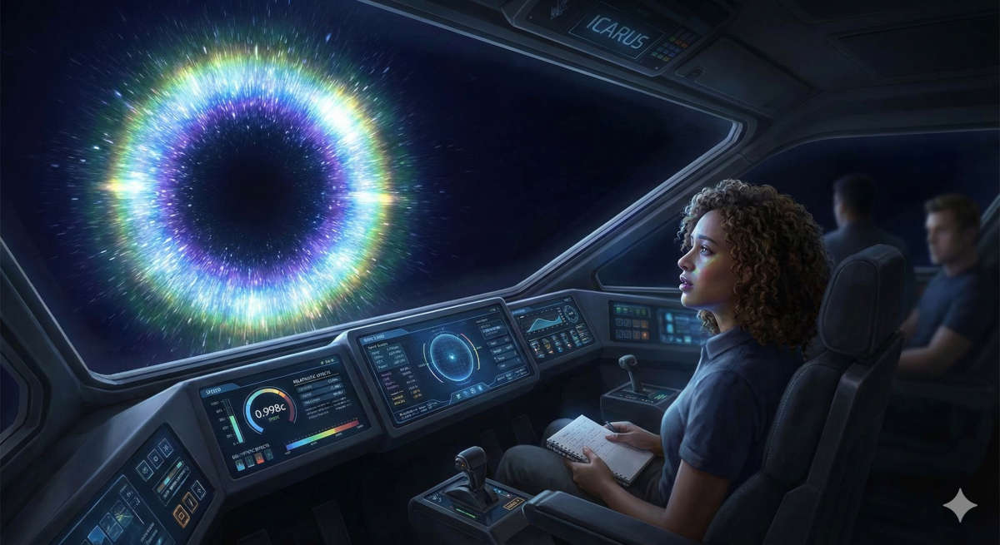
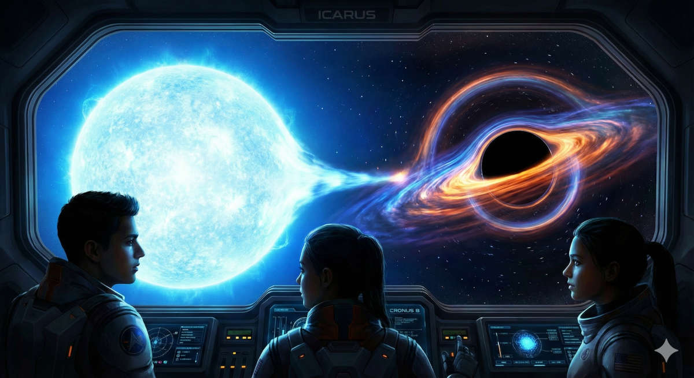
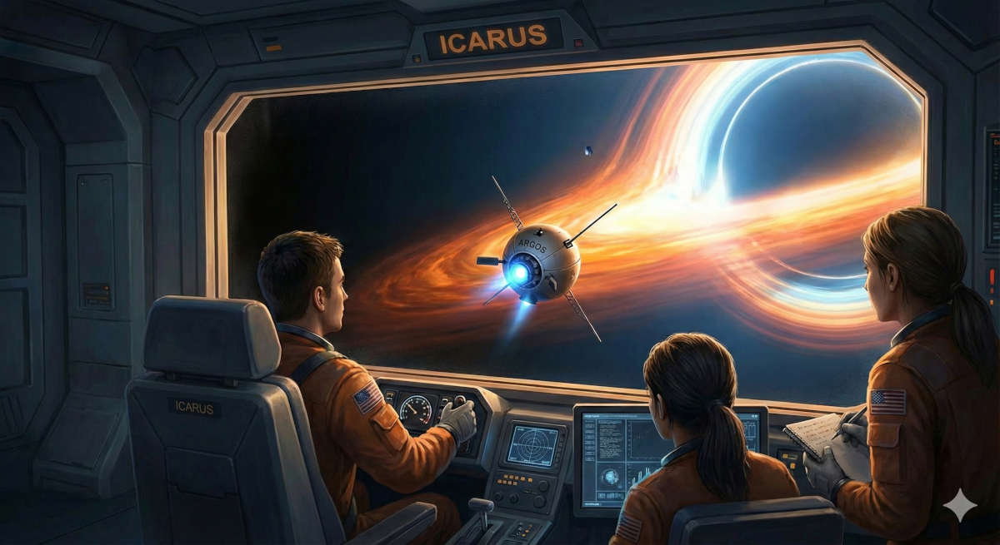
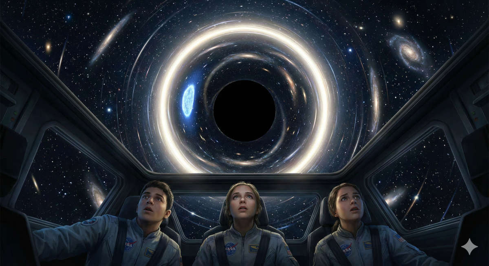
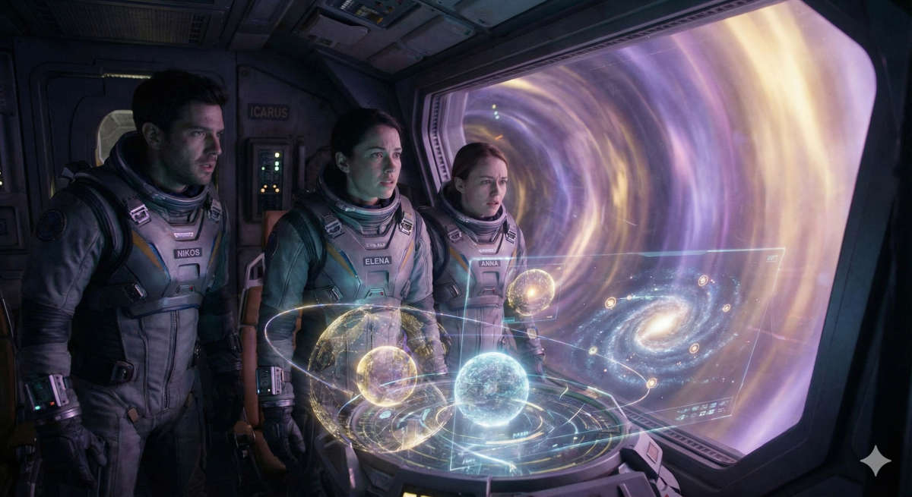
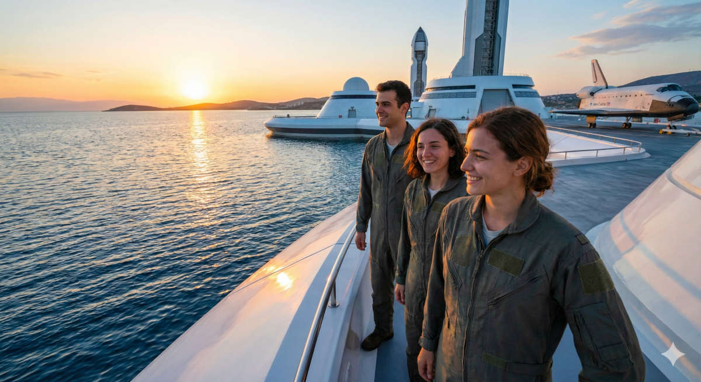

Η σιωπή στον διάδρομο εκτόξευσης δεν έμοιαζε με καμία άλλη σιωπή που
είχε βιώσει ο Νίκος στα δεκαεπτά χρόνια της ζωής του. Δεν ήταν η ησυχία
της νύχτας, ούτε η παύση πριν από μια καταιγίδα. Ήταν η σιωπή της
ιστορίας που κρατούσε την ανάσα της.
Μπροστά τους, λουσμένο στους προβολείς του διαστημικού σταθμού
“Αρχιμήδης”, που βρισκόταν σε τροχιά γύρω από τη Σελήνη, στεκόταν το
“Ίκαρος”.
Δεν έμοιαζε με τα παλιά, δυσκίνητα σκάφη του 21ου αιώνα. Το “Ίκαρος”
ήταν ένα κομψοτέχνημα της νανομηχανικής, μια ασημένια βελόνα μήκους
διακοσίων μέτρων, σχεδιασμένη να σκίζει τον ιστό του χωροχρόνου. Δεν
είχε τεράστιες δεξαμενές καυσίμων, ούτε εμφανείς προωθητήρες. Η καρδιά
του, μια πειραματική μηχανή αντιβαρύτητας που εκμεταλλευόταν την
ενέργεια του κενού, βρισκόταν κρυμμένη βαθιά στα σωθικά του,
περιμένοντας να ξυπνήσει.
«Είναι τρομακτικό, έτσι δεν είναι;» ψιθύρισε η Άννα.
Ο Νίκος γύρισε και την κοίταξε. Η Άννα, επίσης δεκαεπτά ετών, έσφιγγε
πάνω στο στήθος της το παλιό, τσαλακωμένο της σημειωματάριο σαν να ήταν
φυλαχτό. Τα μαλλιά της ήταν ατημέλητα, όπως πάντα, και το βλέμμα της
φαινόταν χαμένο κάπου ανάμεσα στο μέταλλο του σκάφους και στις εξισώσεις
που χόρευαν στο μυαλό της.
«Είναι ένα εργαλείο, Άννα», παρενέβη η Έλενα, φτιάχνοντας τα γυαλιά
της με μια νευρική κίνηση. Στα δεκαέξι της, η Έλενα ήταν η πιο μικρή της
ομάδας, αλλά και η πιο προσγειωμένη. Κοίταζε το τάμπλετ της, ελέγχοντας
για χιλιοστή φορά τα διαγράμματα φορτίου. «Τριάντα χιλιάδες τόνοι
κράματος ανθρακονημάτων και τιτανίου. Στατιστικά, είναι το ασφαλέστερο
όχημα που κατασκεύασε ποτέ η ανθρωπότητα».
Ο Νίκος χαμογέλασε, σπάζοντας την ένταση. «Είναι το εισιτήριό μας,
κορίτσια. Και είμαι ο τυχερός που θα το οδηγήσει». Προσπάθησε να
ακουστεί σίγουρος, ο “Πρακτικός Καπετάνιος” που όλοι περίμεναν να είναι,
αλλά η καρδιά του χτυπούσε σαν τρελή.
«Επιβίβαση σε Τ-μείον 10 λεπτά», ακούστηκε η μεταλλική φωνή του
Κέντρου Ελέγχου.
Το εσωτερικό του “Ίκαρος” μύριζε καινούργιο πολυμερές και οζονισμένο
αέρα. Το πιλοτήριο ήταν ευρύχωρο, κυκλικό, με τρεις θέσεις εργασίας
τοποθετημένες τριγωνικά, ώστε ο καθένας να έχει οπτική επαφή με τους
άλλους. Οι τοίχοι δεν ήταν παρά οθόνες υψηλής ευκρίνειας που αυτή τη
στιγμή έδειχναν το μαύρο του διαστήματος και τη γαλάζια καμπύλη της Γης
στο βάθος.
Ο Νίκος κάθισε στη θέση του κυβερνήτη. Τα χέρια του βρήκαν φυσικά τις
λαβές ελέγχου. Μπροστά του, ολογραφικές ενδείξεις άρχισαν να
αναβοσβήνουν με πράσινο χρώμα.
«Συστήματα υποστήριξης ζωής, ενεργά», ανέφερε τυπικά η Έλενα από τη
θέση της Αστροφυσικού, δεξιά του. «Αισθητήρες μεγάλης εμβέλειας, σε
αναμονή. Οι αντιδραστήρες είναι στο 98%».
«Πλοήγηση;» ρώτησε ο Νίκος.
Η Άννα, καθισμένη αριστερά, άνοιξε το σημειωματάριό της πριν καν
ακουμπήσει την κονσόλα της. «Οι συντεταγμένες είναι κλειδωμένες», είπε
με τη φωνή της να τρέμει ελαφρά. «Αστερισμός του Στεφάνου. Corona
Borealis. Δεκαεννέα έτη φωτός».
Δεκαεννέα έτη φωτός. Η φράση κρεμόταν στον αέρα, βαριά σαν
μολύβι.
Μέχρι πριν από λίγους μήνες, η ανθρωπότητα πίστευε ότι γνώριζε τη
γειτονιά της. Τα ραδιοτηλεσκόπια σάρωναν τον ουρανό για αιώνες. Και
όμως, κάτι τους είχε ξεφύγει. Κάτι σκοτεινό και σιωπηλό. Μια τυχαία
βαρυτική ανωμαλία που εντοπίστηκε από έναν δορυφόρο εξόρυξης στον Άρη
είχε αποκαλύψει το αδύνατο: Ένα διπλό σύστημα. Μια Μελανή Οπή που χόρευε
έναν θανάσιμο χορό με έναν Μπλε Γίγαντα.
Το ονόμασαν “Κρόνο Β”.
«Ακόμα δεν μπορώ να πιστέψω ότι δεν το είδαμε νωρίτερα», μονολόγησε η
Έλενα, κοιτάζοντας τα δεδομένα στην οθόνη της. «Ένας μπλε γίγαντας θα
έπρεπε να λάμπει σαν φάρος. Κάτι εμπόδιζε το φως του. Κάποιο είδος…
νεφελώματος;»
«Ή κάτι άλλο», συμπλήρωσε η Άννα, χωρίς να σηκώσει το κεφάλι από τις
σημειώσεις της. «Ο Κρόνος έτρωγε τα παιδιά του, Έλενα. Ίσως αυτό το
σύστημα να ‘τρώει’ το ίδιο του το φως. Η βαρύτητα εκεί έξω… δεν είναι
απλώς μια δύναμη. Είναι γλύπτης. Λυγίζει τον χώρο, λυγίζει τον
χρόνο».
Ο Νίκος ένιωσε μια ανατριχίλα. «Ωραία, ας αφήσουμε την ποίηση για
αργότερα, Άννα. Σκοπός μας είναι να πάμε, να δούμε τι στο καλό
συμβαίνει, και να γυρίσουμε».
Να γυρίσουν. Η λέξη είχε διπλή σημασία.
Η Ομοσπονδία της Γης είχε επιλέξει νέους εθελοντές για έναν πολύ
συγκεκριμένο, σκληρό λόγο. Η φυσική αντοχή των εφηβικών σωμάτων στις
επιταχύνσεις ήταν ένας παράγοντας, αλλά ο κυριότερος ήταν η
προσαρμοστικότητα και η διάρκεια ζωής.
Το ταξίδι θα γινόταν με το 99,8% της ταχύτητας του φωτός. Για το
πλήρωμα του “Ίκαρος”, το ταξίδι μέχρι τον Κρόνο Β θα διαρκούσε μερικούς
μήνες. Αλλά πίσω στη Γη;
Ο Νίκος κοίταξε την οθόνη επικοινωνίας. Εκεί, σε ένα μικρό παράθυρο,
πάγωσε η εικόνα των γονιών του. Του χαμογελούσαν δακρυσμένοι.
«Ξέρετε τι σημαίνει αυτό, έτσι;» είπε η Έλενα, σκληρή και ρεαλίστρια
όπως πάντα, διαβάζοντας τη σκέψη του. «Όταν φτάσουμε εκεί, στη Γη θα
έχουν περάσει δεκαεννέα χρόνια. Όταν γυρίσουμε… θα έχουν περάσει σχεδόν
σαράντα».
«Θα είμαστε συνομήλικοι με τους γονείς μας», ψιθύρισε η Άννα. «Ή
ίσως… μεγαλύτεροι».
Αυτή ήταν η θυσία. Η Θεωρία της Σχετικότητας δεν ήταν πια ένα
κεφάλαιο στη Φυσική. Ήταν ο τοίχος που θα τους χώριζε από την οικογένειά
τους. Θα έβλεπαν τους φίλους τους να γερνούν, τον κόσμο να αλλάζει, ενώ
αυτοί θα παρέμεναν νέοι, παγιδευμένοι σε ένα αιώνιο “τώρα” μέσα στο
σκάφος.
«Το ξέραμε όταν υπογράψαμε», είπε ο Νίκος σφίγγοντας τα δόντια. «Δεν
το κάνουμε για εμάς. Το κάνουμε γιατί εκεί έξω υπάρχει η μεγαλύτερη πηγή
ενέργειας που βρέθηκε ποτέ. Και ίσως… ίσως βρούμε κάτι που θα αλλάξει
τους κανόνες».
«Οι κανόνες της Φυσικής δεν αλλάζουν, Νίκο», τον διέκοψε η Άννα
ήρεμα. «Αλλά ίσως μάθουμε να χορεύουμε μαζί τους».
«Κέντρο Ελέγχου προς Ίκαρος», η φωνή διέκοψε τις σκέψεις τους. «Έχετε
άδεια για απόπλου. Ο διάδρομος είναι καθαρός. Ο Θεός μαζί σας».
«Ελήφθη, Κέντρο», απάντησε ο Νίκος. Η φωνή του σταθεροποιήθηκε. Έγινε
ξανά ο Κυβερνήτης. «Έλενα, έλεγχος αδράνειας;»
«Αδρανειακοί αποσβεστήρες στο μέγιστο. Αντιβαρύτητα έτοιμη».
«Άννα, υπολογισμός τροχιάς;»
«Καθαρή. Ευθεία τροχιά προς τον αστερισμό».
Ο Νίκος άπλωσε το χέρι του στον κεντρικό μοχλό ισχύος. Ένιωσε το
μέταλλο κρύο κάτω από την παλάμη του. Μια μικρή κίνηση του καρπού θα
απελευθέρωνε ενέργεια ικανή να φωτίσει μια ήπειρο.
«Φεύγουμε», είπε.
Έσπρωξε τον μοχλό μπροστά.
Δεν υπήρξε ο εκκωφαντικός θόρυβος των παλιών πυραύλων. Μόνο ένα βαθύ,
υπόκωφο βουητό που ένιωθες περισσότερο στο στομάχι παρά στα αυτιά. Το
σκάφος αναπήδησε ελαφρά καθώς οι άγκυρες αποδεσμεύτηκαν και η
αντιβαρύτητα νίκησε την έλξη της Σελήνης.
Στην οθόνη, ο διαστημικός σταθμός άρχισε να μικραίνει. Η Γη, μια
πανέμορφη μπλε σφαίρα, με την Σελήνη δίπλα της, φαινόταν να απομακρύνεται με τρομακτική
ταχύτατα.
«Επιτάχυνση 1g», διάβασε η Έλενα. «2g… 3g… Οι αποσβεστήρες κρατάνε
καλά. Νιώθουμε μόνο το 10%».
Το “Ίκαρος” επιτάχυνε σιωπηλά, βγαίνοντας από το σύστημα Γης-Σελήνης
σαν βέλος.
«Περνάμε την τροχιά του Άρη σε… δέκα λεπτά», ανακοίνωσε η Έλενα, με
δυσπιστία στη φωνή της. «Θεέ μου, είναι απίστευτα γρήγορο».
Ο Νίκος κοιτούσε το σκοτάδι μπροστά. Τα αστέρια ήταν ακόμα ακίνητες
κουκκίδες, αλλά ήξερε ότι σύντομα, καθώς θα πλησίαζαν την ταχύτητα του
φωτός, θα άρχιζαν να μετατοπίζονται, να συγκεντρώνονται μπροστά τους
λόγω του φαινομένου Doppler, μετατρέποντας το μαύρο διάστημα σε ένα
ουράνιο τόξο ακτινοβολίας.
Η Άννα άφησε το μολύβι της και κοίταξε έξω.
«Τι σκέφτεσαι;» την ρώτησε ο Νίκος χαμηλόφωνα, ενώ η Έλενα ήταν
απασχολημένη με τις ρυθμίσεις των αισθητήρων.
Η Άννα ακούμπησε το χέρι της στο τζάμι, σαν να ήθελε να αγγίξει το
κενό.
«Σκέφτομαι τον χρόνο, Νίκο», απάντησε. «Νομίζουμε ότι είναι ένα
ποτάμι που κυλάει για όλους το ίδιο. Αλλά δεν είναι. Ο χρόνος είναι
ύφασμα. Όσο πιο γρήγορα ταξιδεύουμε, τόσο περισσότερο τεντώνεται αυτό το
ύφασμα γύρω μας. Εμείς μένουμε ακίνητοι, ενώ ο υπόλοιπος κόσμος… τρέχει.
Θα φτάσουμε στον προορισμό μας νέοι, Νίκο, αλλά θα έχουμε χάσει τη ζωή
που τρέχει πίσω στην πατρίδα».
«Θα δούμε μια εκδοχή της πραγματικότητας που κανείς άλλος δεν έχει
δει», της θύμισε εκείνος, προσπαθώντας να είναι ο ρεαλιστής.
«Ναι», συμφώνησε η Άννα, το βλέμμα της σκοτεινό. «Θα δούμε το πρόσωπο
του τέρατος, και αυτό το τίμημα θα είναι προσωπικό».
Μέσα σε λίγες ώρες, το Ηλιακό Σύστημα δεν ήταν παρά μια ανάμνηση πίσω
τους. Ο Ήλιος είχε γίνει ένα ακόμα φωτεινό αστέρι ανάμεσα σε χιλιάδες
άλλα. Η μηχανή του “Ίκαρος” δούλευε τώρα σε πλήρη ισχύ, σπρώχνοντας το
σκάφος όλο και πιο κοντά στο απόλυτο όριο της ταχύτητας του σύμπαντος.
Ο Νίκος ένιωσε μια παράξενη μοναξιά. Ήταν πλέον οι τρεις τους,
κλεισμένοι σε ένα μεταλλικό κέλυφος, ταξιδεύοντας πάνω στο κύμα της
τεχνολογίας προς το άγνωστο. Κάθε δευτερόλεπτο που περνούσε στο ρολόι
του σκάφους, στη Γη περνούσαν λεπτά, ώρες. Η απόσταση δεν μετριόταν πια
μόνο σε χιλιόμετρα, αλλά σε χαμένες αναμνήσεις, σε γενέθλια που δεν θα
γιόρταζαν ποτέ, σε ανθρώπους που θα γίνονταν ξένοι.
Η Έλενα έσπασε τη σιωπή, η φωνή της επαγγελματική αλλά σφιγμένη.
«Πλησιάζουμε το 0,5c (μισή ταχύτητα του φωτός). Η ασπίδα σωματιδίων
ενεργοποιήθηκε. Αν χτυπήσουμε έστω και έναν κόκκο σκόνης με αυτή την
ταχύτητα χωρίς ασπίδα…»
«Θα γίνουμε πυροτέχνημα», συμπλήρωσε ο Νίκος. «Το ξέρω. Κράτα μας
ασφαλείς, Έλενα».
«Πάντα», απάντησε εκείνη, αν και τα δάχτυλά της έτρεχαν με μανία στο
πληκτρολόγιο.
Η Άννα ξαφνικά ανακάθισε στην καρέκλα της. Το βλέμμα της έγινε
έντονο.
«Νίκο, Έλενα… κοιτάξτε μπροστά. Αρχίζει».
Ο Νίκος κοίταξε την κεντρική οθόνη. Το θέαμα του έκοψε την ανάσα.
Καθώς το σκάφος πλησίαζε την ταχύτητα του φωτός, ο κόσμος έξω άλλαζε.
Τα αστέρια μπροστά τους δεν ήταν πια λευκές κουκκίδες. Είχαν αρχίσει να
γίνονται μπλε, ιώδη, και να λάμπουν με μια απόκοσμη ένταση. Το οπτικό
πεδίο στένευε, σαν το σύμπαν να συμπιέζονταν σε ένα φωτεινό τούνελ
μπροστά τους.
«Η αποπλάνηση του φωτός», ψιθύρισε η Άννα με δέος. «Τρέχουμε τόσο
γρήγορα που κυνηγάμε τα φωτόνια».
«Ταχύτητα 0,9c», ανέφερε η Έλενα. «Χρονοδιαστολή ενεργή. Για κάθε
λεπτό δικό μας, περνούν δύο λεπτά και δεκαοχτώ δευτερόλεπτα στη Γη».
Ο Νίκος έσφιξε τα χέρια του στα χειριστήρια. Δεν υπήρχε επιστροφή
τώρα.
«Πάμε για το 0,998», διέταξε.
Ο βόμβος της μηχανής άλλαξε τόνο, έγινε πιο οξύς, σχεδόν πέρα από τα
όρια της ανθρώπινης ακοής. Το σώμα του Νίκου βάραινε, όχι από την
επιτάχυνση, αλλά από την αίσθηση της ύπαρξης που τεντωνόταν.
Μπροστά τους, το σύμπαν είχε μεταμορφωθεί σε έναν εκτυφλωτικό δίσκο
φωτός. Πίσω τους, το σκοτάδι είχε καταπιεί τα πάντα.
«Σταθεροποίηση στο 0,998c», είπε η Έλενα. Η ανάσα της ήταν κοφτή.
«Είμαστε… είμαστε καθ’ οδόν».
Στο απόλυτο αυτό όριο ταχύτητας, ο χρόνος έξω έτρεχε σαν τρελός ποταμός.
Μέσα στο “Ίκαρος”, η ηρεμία ήταν απατηλή. Ταξίδευαν προς τον αστερισμό
του Στεφάνου, προς τον μυστηριώδη Κρόνο Β.
Η Άννα έκλεισε το σημειωματάριό της και κοίταξε τους συντρόφους
της.
«Καλώς ήρθατε στο μέλλον», είπε χαμογελώντας αμυδρά. «Ελπίζω να
αξίζει το τίμημα».
Ο Νίκος κοίταξε την οθόνη όπου το φως των αστεριών είχε γίνει μια μωβ
δίνη. Στο βάθος εκείνης της δίνης, δεκαεννέα έτη φωτός μακριά, κάτι
περίμενε. Κάτι που είχε τη δύναμη να καταπιεί ήλιους και να παγώσει τον
χρόνο.
«Θα το μάθουμε σύντομα, Άννα», απάντησε ο Νίκος. «Θα το μάθουμε πολύ
σύντομα».
Το “Ίκαρος” χάθηκε στο κενό, αφήνοντας πίσω του τον κόσμο των
ανθρώπων, τρέχοντας να προλάβει το πεπρωμένο του. Το ταξίδι είχε μόλις
αρχίσει.
02. Η Τυραννία της Ταχύτητας

Ο χρόνος στο διάστημα δεν χτυπάει με τον ίδιο ρυθμό όπως στη Γη. Δεν
υπάρχει ανατολή και δύση να οριοθετήσουν τη μέρα, ούτε ο γνώριμος ρυθμός
της καθημερινότητας. Στο “Ίκαρος”, ο χρόνος μετριόταν με την αθόρυβη
δόνηση της αντιβαρυτικής μηχανής και την αλλαγή βάρδιας στις οθόνες
ελέγχου.
Για το πλήρωμα, είχαν περάσει μόλις τρεις εβδομάδες από την
αναχώρηση.
Ο Νίκος επέπλεε στο κεντρικό τμήμα του σκάφους, λύνοντας έναν
τρισδιάστατο γρίφο στο τάμπλετ του για να κρατάει το μυαλό του σε
εγρήγορση. Η έλλειψη βαρύτητας ήταν κάτι που είχαν συνηθίσει, αν και η
μηχανή παρείχε μια τεχνητή βαρύτητα όταν βρίσκονταν στους χώρους
διαβίωσης. Τώρα όμως, για λόγους συντήρησης των αντιδραστήρων, είχαν
αφήσει το σκάφος σε ελεύθερη πτώση.
«Νίκο, έλα στο πιλοτήριο. Τώρα».
Η φωνή της Έλενας από την ενδοεπικοινωνία ήταν κοφτή. Επαγγελματική,
αλλά με μια χροιά έντασης που ο Νίκος αναγνώρισε αμέσως.
Έσπρωξε τον τοίχο και εκτοξεύτηκε μέσα από τον κεντρικό σωλήνα,
φτάνοντας στη γέφυρα σε δευτερόλεπτα. Βρήκε την Άννα και την Έλενα
σκυμμένες πάνω από την κεντρική κονσόλα επικοινωνιών.
«Τι συμβαίνει; Βλάβη;» ρώτησε ο Νίκος, τσεκάροντας ενστικτωδώς τις
ενδείξεις των αντιδραστήρων.
«Λάβαμε το πρώτο “ping” από τη Γη», είπε η Έλενα χωρίς να σηκώσει το
βλέμμα. «Το προγραμματισμένο σήμα ελέγχου».
«Και;»
«Το σήμα είναι καθαρό. Αλλά η χρονοσήμανση…» Η Έλενα σταμάτησε και
πήρε μια βαθιά ανάσα. «Νίκο, το περιμέναμε. Το ξέραμε. Αλλά είναι άλλο
να το βλέπεις στα χαρτιά και άλλο στην οθόνη».
Ο Νίκος πλησίασε και κοίταξε τα νούμερα. Ένιωσε το στομάχι του να
σφίγγεται.
«Πόσο;» ρώτησε χαμηλόφωνα.
«Το σήμα στάλθηκε πριν από οκτώ μήνες», απάντησε η Έλενα. «Οκτώ μήνες
γήινου χρόνου. Για εμάς έχουν περάσει είκοσι μία μέρες».
Η σιωπή που απλώθηκε στο πιλοτήριο ήταν πιο βαριά και από τη βαρύτητα
του Δία. Δεν υπήρχαν ερωτήσεις τύπου “γιατί;”. Και οι τρεις ήξεραν
ακριβώς το γιατί. Είχαν λύσει τις εξισώσεις χιλιάδες φορές στην
εκπαίδευση.
Η Άννα καθόταν στη θέση της, κοιτάζοντας μια ολογραφική προβολή της
εξίσωσης του Λόρεντζ που έλαμπε αχνά μπροστά της.
\[t' = \frac{t}{\sqrt{1 -
\frac{v^2}{c^2}}}\]
«Ο παράγοντας Γάμμα», ψιθύρισε η Άννα, σαν να διάβαζε την ετυμηγορία
της δικής τους καταδίκης. «Στο 0.998c, είναι 15.8. Το ξέραμε. Το
υπολογίσαμε». Σήκωσε το βλέμμα της και κοίταξε τον Νίκο. Τα μάτια της
δεν είχαν απορία, αλλά τρόμο. «Απλά… δεν περίμενα ότι θα πονάει τόσο
πολύ όταν θα το έβλεπα να συμβαίνει».
«Δεκαπέντε κόμμα οκτώ», επανέλαβε ο Νίκος. «Για κάθε μέρα δική μας,
εκεί περνάει μισός μήνας».
Η Έλενα χτύπησε το χέρι της στο υποβραχιόνιο, μια ξαφνική έκρηξη
θυμού που έκρυβε απόγνωση.
«Σκέψου το, Νίκο. Αυτή τη στιγμή που μιλάμε, που παίρνουμε μια ανάσα…
κάτω στη Γη έχουν περάσει λεπτά. Μέχρι να τελειώσουμε αυτή τη βάρδια, θα
έχουν περάσει μέρες. Οι γονείς μας ζουν σε fast forward κι εμείς είμαστε
παγωμένοι».
«Δεν είμαστε παγωμένοι», διόρθωσε η Άννα ήρεμα, αν και η φωνή της
έτρεμε. «Είμαστε γρήγοροι. Τόσο γρήγοροι που ξεπεράσαμε τον ρυθμό της
ζωής. Κλέβουμε χώρο, αλλά το Σύμπαν μας χρεώνει με χρόνο. Είναι το
νόμισμα που πληρώνουμε για να φτάσουμε στα άστρα».
Η Έλενα άνοιξε ένα αρχείο στην οθόνη της. Ήταν μια προσομοίωση του
ημερολογίου.
«Βλέπω τα δεδομένα», είπε με τρεμάμενη φωνή. «Ο αδερφός μου… ο
Στέφανος. Ήταν δέκα όταν φύγαμε. Με αυτόν τον ρυθμό… όταν φρενάρουμε
στον Κρόνο Β, θα είναι είκοσι εννιά. Θα είναι μεγαλύτερος από μένα».
Έβγαλε τα γυαλιά της και έτριψε τα μάτια της, προσπαθώντας να
συγκρατηθεί. «Το ήξερα. Το είχα υπογράψει. Αλλά Θεέ μου… θα χάσω όλη την
ενηλικίωσή του σε ένα ταξίδι μερικών μηνών».
Ο Νίκος κοίταξε την οθόνη με το καθυστερημένο σήμα. Ήταν μια επιστολή
από το παρελθόν. Ήθελε να θυμώσει, να φωνάξει, αλλά ήξερε ότι δεν υπήρχε
επιστροφή.
«Αν γυρίζαμε τώρα;» ρώτησε, περισσότερο σαν ρητορική σκέψη παρά ως
πρόταση.
«Το ξέρεις ότι δεν γίνεται», του απάντησε η Άννα. «Ακόμα κι αν
φρενάραμε τώρα, τα δύο χρόνια που χάθηκαν στη Γη, χάθηκαν για πάντα. Ο
χρόνος δεν έχει όπισθεν, Νίκο. Μόνο γκάζι και φρένο. Και εμείς έχουμε
πατήσει το γκάζι στο πάτωμα».
«Η Τυραννία της Ταχύτητας», ψιθύρισε ο Νίκος. Θυμήθηκε τον τίτλο της
διάλεξης στην Ακαδημία. Τότε του φαινόταν συναρπαστικό. Τώρα καταλάβαινε
ότι ήταν μια προειδοποίηση.
«Λοιπόν», είπε ο Νίκος, ισιώνοντας την πλάτη του, προσπαθώντας να
ξαναβρεί τον ρόλο του καπετάνιου μέσα στο συναισθηματικό χαός. «Αφού το
τίμημα είναι δεδομένο και προπληρωμένο… ας φροντίσουμε να αξίζει τον
κόπο».
Κοίταξε τις δύο κοπέλες.
«Δεν μπορούμε να πάρουμε πίσω τον χρόνο. Μπορούμε όμως να φέρουμε
πίσω κάτι που θα αλλάξει τα πάντα. Συνεχίζουμε».
Οι επόμενες μέρες στο σκάφος πέρασαν μέσα σε μια παράξενη,
μελαγχολική ρουτίνα. Η ψυχολογία του πληρώματος είχε αλλάξει. Δεν ήταν
πια απλώς εξερευνητές. Ήταν εξόριστοι του χρόνου.
Η Άννα περνούσε ώρες κοιτάζοντας το “Starbow” μπροστά τους. Λόγω της
ταχύτητάς τους, το φως των αστεριών είχε συγκεντρωθεί σε έναν δακτύλιο
μπροστά από το σκάφος, αλλάζοντας χρώματα από το υπέρυθρο στο
υπεριώδες.
«Είναι όμορφο», της είπε ο Νίκος ένα βράδυ, βρίσκοντάς την στο
παρατηρητήριο.
«Είναι μια ψευδαίσθηση», απάντησε εκείνη χωρίς να γυρίσει. «Βλέπουμε
το φως όπως νομίζουμε ότι είναι, αλλά στην πραγματικότητα
τρέχουμε πάνω στα φωτόνια. Είναι σαν να βλέπουμε το μέλλον να έρχεται
κατά πάνω μας».
Οι μήνες του ταξιδιού (για το πλήρωμα) κύλησαν. Η ρουτίνα τους έγινε
η άμυνά τους απέναντι στην τρέλα των αριθμών.
Και τότε, ήρθε η στιγμή.
«Προετοιμασία για επιβράδυνση», ανακοίνωσε το σύστημα πλοήγησης.
«Φτάνουμε», είπε ο Νίκος. Η φωνή του ήταν σταθερή. «Έλενα,
κατάσταση;»
«Οι κινητήρες αντιστρέφουν την ώση. Οι αποσβεστήρες αδράνειας στο
100%. Ετοιμαστείτε. Η επιστροφή στον κανονικό χώρο θα είναι…
ανώμαλη».
Το “Ίκαρος” άρχισε να τρέμει. Καθώς η ταχύτητα έπεφτε από το 0.998c,
το φαινόμενο της συστολής του μήκους άρχισε να αντιστρέφεται. Το σύμπαν
γύρω τους, που για μήνες έμοιαζε συμπιεσμένο σε έναν φωτεινό σωλήνα,
άρχισε ξαφνικά να “ανοίγει”.
Τα αστέρια ξεχύθηκαν προς τα έξω, επιστρέφοντας στις κανονικές τους
θέσεις.
«Ταχύτητα 0.5c… 0.1c… Είσοδος σε τροχιά γύρω από το σύστημα», φώναξε
η Έλενα.
Το τράνταγμα σταμάτησε. Η ησυχία επέστρεψε.
Μπροστά τους, γέμιζε την οθόνη, βρισκόταν ο προορισμός τους.
Δεν ήταν απλώς ένα αστέρι. Ήταν ένα τέρας και ένας άγγελος
αγκαλιασμένοι.
Αριστερά, ο Μπλε Γίγαντας, ένα άστρο είκοσι φορές μεγαλύτερο από τον
Ήλιο, σφάδαζε. Και δεξιά του… το Τίποτα. Μια σφαίρα απόλυτου σκότους,
περιτριγυρισμένη από έναν φλεγόμενο δίσκο υλικών.
Η Μελανή Οπή.
«Θεέ μου…» ψιθύρισε η Έλενα.
Ο Νίκος κοίταξε το χρονόμετρο της αποστολής. Χρόνος Αποστολής
(Πλοίο): 1 έτος, 2 μήνες, 4 ημέρες. Χρόνος Γης
(Εκτίμηση): 19 έτη, 3 μήνες.
Η Γη ήταν τώρα μια μακρινή ανάμνηση, 19 χρόνια στο παρελθόν.
«Καλώς ήρθατε στον Κρόνο Β», είπε ο Νίκος. «Φτάσαμε».
«Το ερώτημα είναι», μονολόγησε η Άννα, κλείνοντας το σημειωματάριό
της, «αν θα μας αφήσει να φύγουμε».
03. Η Τυραννία της Βαρύτητας

Το θέαμα στην κεντρική οθόνη του “Ίκαρος” δεν έμοιαζε με τίποτα από
όσα είχαν δει στα βιβλία αστροφυσικής. Οι εξισώσεις ήταν καθαρές,
συμμετρικές. Η πραγματικότητα όμως ήταν βίαιη.
Ο Μπλε Γίγαντας, ένα άστρο είκοσι φορές μεγαλύτερο από τον Ήλιο,
σφάδαζε. Η ατμόσφαιρά του δεν ήταν σφαιρική, αλλά παραμορφωμένη,
τραβηγμένη σαν δάκρυ προς το σκοτεινό κενό που στεκόταν δίπλα του. Ένα
ποτάμι καυτού πλάσματος ξεριζωνόταν από την επιφάνεια του άστρου και
χανόταν μέσα στη Μελανή Οπή, σχηματίζοντας έναν εκτυφλωτικό δίσκο
προσαύξησης που περιστρεφόταν με τρελή ταχύτητα.
«Ο Κρόνος…» ψιθύρισε η Άννα, με τα μάτια καρφωμένα στην εικόνα.
«Τρώει κυριολεκτικά τον σύντροφό του».
«Οι μετρήσεις ακτινοβολίας είναι στο κόκκινο», φώναξε η Έλενα, ενώ
δάχτυλά της χτυπούσαν με μανία το πληκτρολόγιο. «Οι ασπίδες κρατάνε,
αλλά αυτός ο δίσκος εκπέμπει ακτίνες Χ που θα μπορούσαν να αποστειρώσουν
έναν πλανήτη σε δευτερόλεπτα. Νίκο, πρέπει να κρατήσουμε απόσταση».
«Προσπαθώ να σταθεροποιήσω την τροχιά», απάντησε ο Νίκος σφίγγοντας
τα δόντια. «Αλλά το σκάφος… δεν υπακούει όπως πριν».
Το “Ίκαρος” έτριζε. Δεν ήταν ο ήχος της μηχανής. Ήταν ο ήχος του
ίδιου του σκελετού του σκάφους που στέναζε υπό την πίεση.
Και τότε το ένιωσαν.
Δεν ήταν πόνος ακριβώς. Ήταν μια βαθιά, ανησυχητική αίσθηση ότι το
σώμα τους δεν τους ανήκε πια. Ο Νίκος ένιωσε τις μπότες του να
βαραίνουν, σαν κάποιος να του τραβούσε τα πόδια προς το πάτωμα με
τεράστια δύναμη, ενώ το κεφάλι του ένιωθε ελαφρύ, σαν να τραβιόταν προς
την αντίθετη κατεύθυνση.
«Τι στο καλό είναι αυτό;» ρώτησε, νιώθοντας τη σπονδυλική του στήλη
να τεντώνεται.
«Παλιρροϊκές δυνάμεις», εξήγησε η Άννα. Η φωνή της ακουγόταν
πνιγμένη, σαν να μιλούσε κάτω από νερό. «Η βαρύτητα της μαύρης τρύπας
δεν είναι ομοιογενής, Νίκο. Η έλξη στα πόδια μας είναι ισχυρότερη από
ό,τι στο κεφάλι μας, γιατί τα πόδια μας είναι… δύο μέτρα πιο κοντά στο
κέντρο της».
«Spaghettification», συμπλήρωσε η Έλενα με τρόμο. «Η διαδικασία της
μακαρονοποίησης. Αν πλησιάσουμε κι άλλο, θα μας τεντώσει μέχρι να
σπάσουμε».
«Δεν θα πλησιάσουμε κι άλλο», γρύλισε ο Νίκος. Πάλεψε με τα
χειριστήρια, ενεργοποιώντας τους πλευρικούς προωθητήρες για να διορθώσει
τη γωνία τους. Κάθε κίνηση του χεριού του απαιτούσε διπλάσια προσπάθεια.
«Η Τυραννία της Βαρύτητας», σκέφτηκε. Στο προηγούμενο επεισόδιο πάλευαν
με τον χρόνο. Τώρα, ο χώρος ήταν ο εχθρός.
Ξαφνικά, ένας υπόκωφος χτύπος διέτρεξε το σκάφος.
Ντουπ.
Σιωπή.
Ντουπ.
Σαν καρδιά. Μια γιγαντιαία, μεταλλική καρδιά που χτυπούσε στο κενό.
Τα φώτα στο πιλοτήριο τρεμόπαιξαν.
«Τι ήταν αυτό;» ρώτησε η Έλενα. «Χτυπήσαμε κάτι;»
Η Άννα κοίταξε τον ολογραφικό χάρτη του χωροχρόνου. Οι γραμμές του
πλέγματος δεν ήταν ευθείες. Κυμάτιζαν.
«Δεν χτυπήσαμε τίποτα», είπε η Άννα, με ένα μείγμα δέους και φόβου.
«Ακούμε το Σύμπαν να τρίζει. Είναι βαρυτικά κύματα».
«Βαρυτικά κύματα;»
«Ο Μπλε Γίγαντας και η Μελανή Οπή περιφέρονται ο ένας γύρω από τον
άλλον τόσο γρήγορα… που αναταράσσουν τον ιστό του χώρου», συνέχισε η
Άννα. «Σαν πέτρες που πέφτουν σε λίμνη. Αυτό που νιώθουμε… αυτός ο
ρυθμός… είναι ο χώρος που συστέλλεται και διαστέλλεται καθώς το κύμα
περνάει από μέσα μας».
Ο Νίκος κοίταξε τα χέρια του πάνω στο πηδάλιο. Για μια στιγμή, του
φάνηκε ότι τα δάχτυλά του μάκρυναν και μετά κοντύνανε ξανά, ακολουθώντας
τον ρυθμό του αόρατου τυμπάνου.
Ντουπ.
«Είναι απίστευτο», ψιθύρισε. «Είμαστε μέσα σε μια καμπάνα που
ηχεί».
«Είναι επικίνδυνο», τον διόρθωσε η Έλενα, κοιτάζοντας τις ενδείξεις
δομικής ακεραιότητας. «Οι ενώσεις του σκάφους δέχονται τρομερή
καταπόνηση. Πρέπει να βρούμε ένα “ήσυχο” σημείο, ένα σημείο Lagrange ή
μια σταθερή τροχιά, μακριά από τη ζώνη των μεγάλων κυμάτων».
«Εκεί», έδειξε ο Νίκος στην οθόνη. «Πίσω από τον δίσκο προσαύξησης.
Υπάρχει μια ζώνη σταθερότητας».
Οδήγησε το “Ίκαρος” με προσοχή, σαν να περπατούσε σε τεντωμένο
σκοινί. Η θέα της Μαύρης Τρύπας γέμιζε τώρα ολόκληρο το μπροστινό
τζάμι.
Ήταν μια τέλεια σφαίρα απόλυτου σκότους. Γύρω της, ο δίσκος των
υλικών έλαμπε με χρώματα που το ανθρώπινο μάτι δυσκολευόταν να
επεξεργαστεί — βιολετί, λευκό, και αποχρώσεις του μπλε που δεν υπήρχαν
στη Γη. Αλλά το πιο παράξενο ήταν το “φωτοστέφανο”. Λόγω της βαρύτητας
που λύγιζε το φως, μπορούσαν να δουν το πίσω μέρος του δίσκου να
σηκώνεται και να σχηματίζει ένα φωτοστέφανο γύρω από τη μαύρη
σφαίρα.
«Βλέπουμε την πλάτη του δίσκου… πάνω από το κεφάλι της τρύπας», είπε
η Άννα μαγεμένη. «Ο χώρος είναι τόσο καμπυλωμένος που το φως κάνει
κύκλους».
«Ο Ορίζοντας Γεγονότων», είπε η Έλενα, δείχνοντας το όριο ανάμεσα στο
φως και στο απόλυτο σκοτάδι. «Το σημείο χωρίς επιστροφή. Αν περάσουμε
εκείνη τη γραμμή, ούτε το φως δεν μπορεί να γυρίσει πίσω. Θα σβήσουμε
από το σύμπαν».
Ο Νίκος κατάφερε να σταθεροποιήσει το σκάφος σε μια τροχιά ασφαλείας,
περίπου 500.000 χιλιόμετρα από τον ορίζοντα. Η έλξη στα πόδια τους
μειώθηκε, αλλά δεν εξαφανίστηκε. Έμεινε εκεί, μια διαρκής υπενθύμιση ότι
βρίσκονταν στο κατώφλι του θηρίου.
Οι τρεις τους έμειναν σιωπηλοί, κοιτάζοντας το μαύρο μάτι του Κρόνου
Β.
«Είμαστε εδώ», είπε τελικά ο Νίκος. «Μετά από 19 χρόνια γήινου
χρόνου. Φτάσαμε».
«Το ερώτημα είναι», μονολόγησε η Άννα, κλείνοντας το σημειωματάριό
της που τώρα έμοιαζε ανούσιο μπροστά στο μεγαλείο της φύσης, «αν θα μας
αφήσει να φύγουμε».
Η Έλενα κοίταξε μια νέα ένδειξη που άναψε στην κονσόλα της.
«Παιδιά…», η φωνή της ήταν μόλις ένας ψίθυρος. «Οι αισθητήρες πιάνουν
κάτι. Κάτι που δεν είναι φυσικό. Μέσα στον δίσκο».
Ο Νίκος και η Άννα γύρισαν απότομα.
«Τι εννοείς;»
«Υπάρχει μια δομή. Ένας τέλειος κύκλος. Και εκπέμπει… ρυθμικά
σήματα».
Ο Νίκος κοίταξε τη μαύρη άβυσσο. Νόμιζαν ότι είχαν έρθει να
εξερευνήσουν τη φύση. Αλλά φαίνεται πως η φύση είχε ήδη παρέα.
«Ετοιμάστε το ρομποτικό σκάφος», διέταξε ο Νίκος. «Πάμε να δούμε από
κοντά».
04. Το Βλέμμα στην Άβυσσο

«Εκτόξευση του “Άργος” σε τρία, δύο, ένα… Τώρα».
Ο Νίκος πάτησε το κουμπί απελευθέρωσης. Από την κοιλιά του “Ίκαρος”
αποσπάστηκε ένα μικρό, σφαιρικό σκάφος, όχι μεγαλύτερο από μια μπάλα
ποδοσφαίρου, φορτωμένο με κάμερες και αισθητήρες τελευταίας
τεχνολογίας.
Το “Άργος” ήταν τα μάτια τους εκεί που το ανθρώπινο σώμα θα γινόταν
ατμός.
«Τηλεμετρία ενεργή», ανέφερε η Έλενα, προβάλλοντας την εικόνα από το
drone στην κεντρική οθόνη. «Έχουμε καθαρή εικόνα. Κατεβαίνει προς τον
δίσκο».
Στην οθόνη, το χάος του Κρόνου Β φαινόταν ακόμα πιο τρομακτικό. Το
“Άργος” βυθίστηκε στον εξωτερικό δακτύλιο του δίσκου προσαύξησης.
Ποτάμια ιονισμένου αερίου στροβιλίζονταν γύρω του.
«Η θερμοκρασία ανεβαίνει», είπε η Έλενα. «Δέκα εκατομμύρια βαθμοί
Κελσίου. Οι ασπίδες του drone αντέχουν, αλλά όχι για πολύ».
Το drone ελίχθηκε ανάμεσα στα ρεύματα πλάσματος, πλησιάζοντας το
απόλυτο σκοτάδι στο κέντρο.
«Κοιτάξτε την ταχύτητά του», παρατήρησε ο Νίκος. «Δεν χρησιμοποιεί
προωθητήρες, αλλά επιταχύνει πλαγίως».
«Δεν κινείται το drone, Νίκο», είπε η Άννα, με τη φωνή της να
προδίδει δέος. «Κινείται ο χώρος. Η μαύρη τρύπα περιστρέφεται τόσο
γρήγορα που παρασέρνει τον χωροχρόνο γύρω της, σαν κουτάλι που
ανακατεύει μέλι. Είναι το φαινόμενο Frame Dragging».
Το “Άργος” στροβιλιζόταν τώρα σε μια τρελή σπείρα, παρασυρμένο από
την ίδια την περιστροφή του σύμπαντος γύρω από το τέρας. Και τότε,
έφτασε στο όριο.
Μπροστά του απλωνόταν ο Ορίζοντας Γεγονότων. Μια τέλεια, μαύρη
σφαίρα. Τίποτα δεν αντανακλούσε πάνω της. Ήταν μια τρύπα στην
πραγματικότητα.
«Πλησιάζει το σημείο μηδέν», είπε η Έλενα. «Αλλά… κάτι συμβαίνει με
την εικόνα. Το χρώμα αλλάζει».
Η εικόνα που έστελνε το drone, η οποία έδειχνε τα αέρια που έπεφταν
μέσα στην τρύπα, άρχισε να χάνει τη λάμψη της. Το έντονο μπλε του
πλάσματος έγινε κίτρινο, μετά πορτοκαλί, και τελικά ένα βαθύ, σκοτεινό
κόκκινο.
«Βαρυτική μετατόπιση προς το ερυθρό», εξήγησε η Άννα, γράφοντας
γρήγορα στο σημειωματάριό της, αν και τα μάτια της δεν έφευγαν από την
οθόνη. «Το φως παλεύει να δραπετεύσει από τη βαρύτητα. Χάνει ενέργεια.
Το μήκος κύματος μεγαλώνει. Γίνεται κόκκινο».
«Και… σταματάει», είπε ο Νίκος σαστισμένος.
Στην οθόνη, το “Άργος” φαινόταν να έχει “παγώσει” λίγο πριν αγγίξει
το μαύρο σκοτάδι. Έμενε εκεί, ακίνητο, σαν μια κόκκινη, ξεθωριασμένη
κουκκίδα που γινόταν όλο και πιο αμυδρή.
«Γιατί σταμάτησε; Χάλασε;»
«Όχι», απάντησε η Άννα ψιθυριστά. «Για το drone, η πτώση συνεχίζεται
κανονικά. Έχει ήδη περάσει τον ορίζοντα και έχει χαθεί για πάντα. Αλλά
για εμάς, τους παρατηρητές απ’ έξω… ο χρόνος εκεί κάτω κυλάει τόσο αργά
που μοιάζει να έχει σταματήσει. Βλέπουμε την τελευταία του εικόνα,
παγωμένη στην αιωνιότητα, να ξεθωριάζει μέχρι να γίνει αόρατη».
Ήταν μια στοιχειωτική εικόνα. Το φάντασμα του μηχανήματος, κολλημένο
για πάντα στην άκρη του γκρεμού.
«Περιμένετε», φώναξε ξαφνικά η Έλενα. «Πριν διακοπεί η ροή δεδομένων…
το “Άργος” έστειλε ένα πακέτο τηλεμετρίας. Σάρωσε κάτι στον νότιο πόλο
της μαύρης τρύπας».
Τα δάχτυλά της πέταξαν πάνω στο πληκτρολόγιο, προσπαθώντας να
καθαρίσει την εικόνα από τον θόρυβο της ακτινοβολίας.
«Επεξεργασία εικόνας… αφαίρεση θορύβου… Ορίστε».
Στην κεντρική οθόνη εμφανίστηκε μια θολή, αλλά ευδιάκριτη εικόνα.
Ακριβώς πάνω από τον ορίζοντα γεγονότων, εκεί που η βαρύτητα θα
έπρεπε να διαλύει τα πάντα, υπήρχε κάτι γεωμετρικό.
Ένας δακτύλιος.
Ήταν τεράστιος, με διάμετρο χιλιάδων χιλιομέτρων, κατασκευασμένος από
ένα σκοτεινό, μεταλλικό υλικό που μόλις και διακρινόταν στο φόντο του
διαστήματος. Δεν στροβιλιζόταν όπως τα αέρια. Ήταν σταθερός.
«Αυτό δεν είναι φυσικό φαινόμενο», είπε ο Νίκος, νιώθοντας την τρίχα
του να σηκώνεται. «Η φύση δεν φτιάχνει τέλειους κύκλους από
μέταλλο».
«Κοιτάξτε εδώ», έδειξε η Άννα, μεγεθύνοντας την εικόνα. «Ο δακτύλιος
δεν ακουμπάει τον ορίζοντα. Αιωρείται λίγο πιο πάνω. Και… βλέπετε αυτές
τις λάμψεις;»
Από διάφορα σημεία του δακτυλίου, πίδακες ενέργειας εκτοξεύονταν προς
τα πάνω, διαπερνώντας τον δίσκο προσαύξησης και φεύγοντας προς το
διάστημα.
«Είναι σταθμός», είπε η Έλενα σοκαρισμένη. «Κάποιος… κάτι… έχτισε
έναν σταθμό γύρω από μια μαύρη τρύπα».
«Αλλά πώς;» αναρωτήθηκε ο Νίκος. «Η βαρύτητα εκεί είναι συντριπτική.
Θα έπρεπε να έχει γίνει θρύψαλα».
Η Άννα κοίταζε τον δακτύλιο με ένα βλέμμα που συνδύαζε τον θαυμασμό
με τον τρόμο.
«Εκτός κι αν χρησιμοποιούν την ίδια την περιστροφή για να μείνουν
εκεί», μονολόγησε. «Αντλούν ενέργεια. Ο Κρόνος Β δεν είναι απλώς ένα
ουράνιο σώμα για αυτούς. Είναι μπαταρία. Μια μπαταρία άπειρης
ενέργειας».
Η Έλενα γύρισε προς τον Νίκο. Το πρόσωπό της ήταν χλωμό.
«Νίκο, η σάρωση δείχνει ότι ο δακτύλιος εκπέμπει ένα σήμα. Ένα
ρυθμικό παλμό που επαναλαμβάνεται κάθε 1,618 δευτερόλεπτα».
«Η Χρυσή Τομή», είπε η Άννα. «Είναι μαθηματικά. Είναι γλώσσα».
«Μας καλούν;» ρώτησε ο Νίκος.
«Ή μας προειδοποιούν», απάντησε η Έλενα.
Ο Νίκος κοίταξε τον μυστηριώδη δακτύλιο στην οθόνη. Ήταν 19 έτη φωτός
μακριά από τη Γη, αντιμέτωποι με μια τεχνολογία που ξεπερνούσε κάθε
ανθρώπινη φαντασία. Το “Άργος” είχε χαθεί, θυσία στον βωμό της γνώσης.
Τώρα ήταν η σειρά τους να αποφασίσουν.
«Δεν ήρθαμε μέχρι εδώ για να κοιτάμε φωτογραφίες», είπε ο Νίκος
αποφασιστικά, αν και η καρδιά του χτυπούσε σαν τρελή. «Πρέπει να δούμε
τι είναι αυτός ο δακτύλιος. Πρέπει να κατέβουμε».
«Νίκο, είναι αυτοκτονία!» φώναξε η Έλενα. «Το “Άργος” διαλύθηκε!»
«Το “Άργος” δεν είχε πιλότο», αντέτεινε εκείνος. «Και δεν είχε την
Άννα να υπολογίζει την τροχιά σε πραγματικό χρόνο».
Γύρισε προς την Άννα.
«Μπορείς να μας βγάλεις μια πορεία; Μια τροχιά που να μας φέρει κοντά
στον δακτύλιο χωρίς να μας ρίξει μέσα;»
Η Άννα δάγκωσε τα χείλη της. Κοίταξε τις εξισώσεις στο τετράδιό της,
μετά τον μαύρο ορίζοντα στην οθόνη. Ήταν η απόλυτη πρόκληση. Ένας χορός
στην κόψη του ξυραφιού.
«Υπάρχει ένας τρόπος», είπε αργά. «Αλλά θα πρέπει να μπούμε στην
Εργόσφαιρα. Εκεί που ο χώρος τρέχει πιο γρήγορα από το φως. Αν κάνουμε
το παραμικρό λάθος… ο χρόνος μας θα τελειώσει. Κυριολεκτικά».
Ο Νίκος έβαλε τα χέρια του στα χειριστήρια.
«Τότε ας φροντίσουμε να μην κάνουμε λάθος. Ετοιμαστείτε για
κατάδυση».
05. Στην Καρδιά της Εργόσφαιρας

Η απόφαση είχε παρθεί, αλλά η σιωπή που ακολούθησε ήταν πιο βαριά και
από τη βαρύτητα της μαύρης τρύπας. Ο Νίκος έσπρωξε το πηδάλιο
μπροστά.
Το “Ίκαρος” βούτηξε.
Δεν ήταν μια απλή πτώση. Ήταν σαν να γλιστρούσαν στην πλαγιά ενός
αόρατου, γιγαντιαίου χωνιού. Καθώς το σκάφος πλησίαζε τον Κρόνο Β, η
πραγματικότητα άρχισε να παραμορφώνεται.
«Είσοδος στην Εργόσφαιρα σε δέκα δευτερόλεπτα», φώναξε η Έλενα, με τη
φωνή της να τρέμει από τους κραδασμούς που συγκλόνιζαν το πιλοτήριο.
«Νίκο, θυμήσου: Εδώ ο χώρος δεν στέκεται ακίνητος!»
«Το νιώθω!» γρύλισε ο Νίκος.
Το σκάφος δεν πήγαινε ευθεία. Παρόλο που η μύτη του “Ίκαρος” σκοπέυε
τον μυστηριώδη δακτύλιο, ολόκληρο το σκάφος παρασυρόταν βίαια προς τα
δεξιά, στροβιλιζόμενο γύρω από τον ισημερινό της μαύρης τρύπας.
«Frame Dragging», είπε η Άννα, αρπάζοντας τα χερούλια της καρέκλας
της τόσο δυνατά που τα δάχτυλά της άσπρισαν. «Η περιστροφή της τρύπας
παρασέρνει τον χωροχρόνο μαζί της. Είναι σαν να προσπαθείς να
κολυμπήσεις κόντρα σε ένα ορμητικό ποτάμι».
«Αν προσπαθήσω να πάω κόντρα στο ρεύμα, θα κάψω τις μηχανές», είπε ο
Νίκος, ιδρώτας να κυλάει στο μέτωπό του. «Θα πάω με το ρεύμα.
Θα σερφάρουμε πάνω στον στρεβλωμένο χώρο».
Έγειρε το σκάφος, αφήνοντας την τρομερή φυγόκεντρο δύναμη να τους
σπρώξει, μετατρέποντας την πτώση σε μια τρελή σπείρα προς τον στόχο.
Και τότε, ο πόνος επέστρεψε, χειρότερος από ποτέ.
Οι παλιρροϊκές δυνάμεις δεν ήταν πια μια απλή ενόχληση. Ήταν
βασανιστήριο. Ο Νίκος ένιωσε τους συνδέσμους στα γόνατά του να τρίζουν.
Το στήθος του συμπιέστηκε. Το αίμα δυσκολευόταν να ανέβει στο κεφάλι
του.
«Δομική ακεραιότητα στο 85%», ούρλιαξε η Έλενα πάνω από τον θόρυβο
του μετάλλου που έκλαιγε. «Το σκάφος τεντώνεται, Νίκο! Θα κοπούμε στα
δύο!»
«Λίγο ακόμα…» ψιθύρισε ο Νίκος, με την όρασή του να θολώνει από την
πίεση.
Κοίταξε έξω. Αυτό που είδε τον έκανε να ξεχάσει τον πόνο.
Το Σύμπαν είχε εξαφανιστεί.
Ή μάλλον, είχε συρρικνωθεί. Πίσω τους, εκεί που έπρεπε να είναι ο
ουρανός γεμάτος αστέρια, υπήρχε τώρα μόνο ένας φωτεινός, μικρός κύκλος.
Όλο το φως του σύμπαντος —τα αστέρια, οι γαλαξίες, ο Μπλε Γίγαντας— είχε
συγκεντρωθεί σε ένα “παράθυρο” που γινόταν όλο και πιο μικρό όσο
κατέβαιναν.
«Βαρυτικός Φακός», είπε η Άννα με δέος. «Το φως πέφτει μαζί μας.
Βλέπουμε ολόκληρο το σύμπαν σαν μια μικρή κουκκίδα πίσω μας. Και
κοιτάξτε… βλέπετε τα είδωλα;»
Μέσα σε εκείνον τον μικρό κύκλο φωτός, έβλεπαν τα ίδια αστέρια δύο
και τρεις φορές, αντικατοπτρισμούς του κόσμου που άφηναν πίσω, καθώς το
φως έκανε κύκλους γύρω από τη μαύρη τρύπα πριν φτάσει στα μάτια
τους.
«Είμαστε μόνοι μας», ψιθύρισε η Έλενα. «Το σύμπαν κλείνει την πόρτα
πίσω μας».
Το “Ίκαρος” βρισκόταν τώρα ακριβώς πάνω από τον Ορίζοντα Γεγονότων.
Κάτω τους, το απόλυτο τίποτα. Μια άβυσσος χωρίς πάτο. Και εκεί, να
αιωρείται σαν στέμμα πάνω από το σκοτάδι, βρισκόταν ο Δακτύλιος.
Ήταν τιτάνιος. Κατασκευασμένος από ένα μαύρο μέταλλο που απορροφούσε
το φως, γεμάτος αυλακώσεις όπου έρεε μπλε ενέργεια.
«Ετοιμάζομαι για συγχρονισμό τροχιάς», είπε ο Νίκος. «Πρέπει να
τρέξουμε με την ίδια ταχύτητα με τον Δακτύλιο για να προσδεθούμε».
«Πρόσεχε το χρόνο!» φώναξε η Έλενα ξαφνικά, κοιτάζοντας το χρονόμετρο
της αποστολής. Το πρόσωπό της ήταν λευκό σαν πανί.
«Τι εννοείς;»
«Νίκο, είμαστε πολύ βαθιά. Η βαρυτική διαστολή του χρόνου εδώ είναι
εκθετική. Δεν χάνουμε απλώς μέρες. Χάνουμε χρόνια».
Η Έλενα έδειξε την οθόνη με τους υπολογισμούς. Οι αριθμοί άλλαζαν με
φρενήρη ρυθμό.
«Για κάθε λεπτό που περνάμε σε αυτό το ύψος… στη Γη περνούν πέντε
χρόνια».
Η φράση έπεσε σαν κεραυνός στο πιλοτήριο.
Ο Νίκος πάγωσε. Το χέρι του έμεινε μετέωρο πάνω από το
χειριστήριο.
«Πέντε χρόνια το λεπτό;» ρώτησε η Άννα, με τη φωνή της σπασμένη.
«Ναι», απάντησε η Έλενα με δάκρυα στα μάτια. «Είμαστε εδώ κάτω ήδη
δύο λεπτά. Έχουν περάσει δέκα χρόνια στη Γη. Αν μείνουμε άλλα πέντε
λεπτά για να προσδεθούμε… οι γονείς μας θα έχουν πεθάνει. Όλοι όσοι
ξέραμε θα είναι γέροι ή νεκροί».
Ήταν το απόλυτο δίλημμα. Κάθε δισταγμός, κάθε δευτερόλεπτο σκέψης,
κόστιζε ζωές. Κόστιζε μνήμες. Αν το συζητούσαν για λίγο ακόμα, ο κόσμος
που ήξεραν θα γινόταν ιστορία.
«Δεν μπορούμε να γυρίσουμε πίσω τώρα», είπε ο Νίκος σκληρά. «Αν
προσπαθήσουμε να φύγουμε χωρίς την ενέργεια από αυτόν τον Δακτύλιο, η
βαρύτητα θα μας τραβήξει μέσα. Είμαστε παγιδευμένοι».
«Τότε κάντο γρήγορα!» φώναξε η Έλενα. «Κάντο τώρα!»
Ο Νίκος ενεργοποίησε τους κινητήρες στο μέγιστο. Το “Ίκαρος” ούρλιαξε
καθώς πάλευε να εξισώσει την ταχύτητά του με τον εξωγήινο σταθμό. Η
φυγόκεντρος τους κόλλησε στις καρέκλες τους.
Μπροστά τους, μια θύρα στον Δακτύλιο άνοιξε, φωτισμένη με ένα
φιλόξενο, αλλά τρομακτικό μπλε φως.
«Προσέγγιση στα 100 μέτρα», μετρούσε η Άννα. «50 μέτρα… 10
μέτρα…»
Ένας μεταλλικός κρότος αντήχησε σε όλο το σκάφος. Οι μαγνητικές
άγκυρες κλείδωσαν.
Το τράνταγμα σταμάτησε. Ο θόρυβος των μηχανών έσβησε.
Βρίσκονταν “δεμένοι” πάνω σε μια κατασκευή αγνώστου ταυτότητας,
αιωρούμενοι πάνω από το τέλος του χρόνου.
Η Έλενα κοίταξε το ρολόι της και μετά την Άννα.
«Τέσσερα λεπτά», ψιθύρισε. «Μείναμε στην κάθοδο τέσσερα λεπτά».
«Είκοσι χρόνια», απάντησε η Άννα, κλείνοντας τα μάτια της. «Συν τα
δεκαεννέα του ταξιδιού… Σαράντα χρόνια. Στη Γη είναι σχεδόν το
2100».
Ο Νίκος ξεκουμπώθηκε από τη θέση του. Ένιωθε βαρύς, όχι μόνο από την
βαρύτητα, αλλά από τις τύψεις.
«Τότε ας βεβαιωθούμε ότι άξιζε τον κόπο», είπε, κοιτάζοντας την
αεροστεγή θύρα που οδηγούσε στο εσωτερικό του Δακτυλίου. «Πάμε να δούμε
ποιος έχτισε σπίτι στην κόλαση».
Έξω, ο ορίζοντας γεγονότων περίμενε σιωπηλός, και ο ουρανός από πάνω
τους ήταν μια μικρή, μακρινή τρύπα φωτός που τους υπενθύμιζε πόσο μακριά
—χρονικά και τοπικά— είχαν χαθεί.
06. Η Μηχανή του Θεού
Η αεροστεγής θύρα του “Ίκαρος” άνοιξε με ένα σιγανό σφύριγμα,
εξισώνοντας την πίεση με τον αεροφράκτη του εξωγήινου Δακτυλίου. Ο αέρας
που μπήκε μέσα δεν μύριζε ούτε μέταλλο, ούτε χημικά. Μύριζε… στατικό
ηλεκτρισμό και όζον. Μύριζε καταιγίδα.
Ο Νίκος πέρασε πρώτος, φορώντας τη στολή του, με την Άννα και την
Έλενα να ακολουθούν. Τα φώτα στις στολές τους έσκισαν το ημίφως.
Βρέθηκαν σε έναν διάδρομο τεράστιων διαστάσεων. Οι τοίχοι δεν ήταν
φτιαγμένοι από συνηθισμένη ύλη, αλλά από ένα σκούρο, ημιδιάφανο υλικό
που έμοιαζε να πάλλεται. Κάτω από την επιφάνεια, αχνές φλέβες γαλάζιου
φωτός κυλούσαν σαν αίμα, μεταφέροντας πληροφορία ή ενέργεια προς μια
κατεύθυνση.
«Δεν υπάρχουν πόρτες», παρατήρησε η Έλενα, κοιτάζοντας το τάμπλετ της
που κατέγραφε μανιωδώς δεδομένα. «Δεν υπάρχουν παράθυρα. Δεν υπάρχουν
καν επιγραφές. Αυτό το μέρος δεν φτιάχτηκε για να ζουν όντα μέσα
του».
«Όχι», συμφώνησε η Άννα, αγγίζοντας τον παλλόμενο τοίχο. «Αυτό δεν
είναι κατοικία, Έλενα. Είναι το εσωτερικό μιας μηχανής».
Περπάτησαν για ώρα, ακολουθώντας τη ροή των φωτεινών φλεβών. Η
βαρύτητα μέσα στον Δακτύλιο ήταν τεχνητή και σταθερή, μια ανακούφιση
μετά τη σωματική κακοποίηση που είχαν υποστεί στην κάθοδο. Όμως, η
αίσθηση ότι βρίσκονταν κρεμασμένοι πάνω από την άβυσσο, πάνω από το
τέλος του χρόνου, δεν έλεγε να φύγει.
Τελικά, ο διάδρομος άνοιξε σε μια γιγαντιαία αίθουσα.
Δεν υπήρχε πάτωμα στο κέντρο της. Μόνο ένας εξώστης που περιέβαλε ένα
τεράστιο κυκλικό άνοιγμα, καλυμμένο από ένα ενεργειακό πεδίο.
Οι τρεις τους πλησίασαν στο χείλος και κοίταξαν κάτω.
Αυτό που είδαν τους έκοψε την ανάσα.
Μέσα από το διαφανές ενεργειακό πεδίο, έβλεπαν απευθείας τον “Κρόνο
Β”. Αλλά όχι όπως τον έβλεπαν από το διάστημα. Εδώ, βρίσκονταν
μέσα στην Εργόσφαιρα.
Έβλεπαν τον ορίζοντα γεγονότων, τη μαύρη σφαίρα, να περιστρέφεται με
ιλιγγιώδη ταχύτητα. Ο χώρος γύρω της ήταν θολός, στροβιλιζόμενος, σαν
λάδι που ανακατεύεται.
«Κοιτάξτε εκεί!» έδειξε ο Νίκος.
Από διάφορα σημεία του εσωτερικού του Δακτυλίου, τεράστια μπλοκ ύλης
—έμοιαζαν με συμπιεσμένα αποβλήτα ή βράχους αστεροειδών—
απελευθερώνονταν και έπεφταν προς τη μαύρη τρύπα.
Τα παρακολούθησαν να πέφτουν. Καθώς πλησίαζαν τη ζώνη της μέγιστης
περιστροφής, τα μπλοκ διαλύονταν βίαια. Ένα κομμάτι τους χανόταν μέσα
στο σκοτάδι του ορίζοντα. Αλλά το άλλο κομμάτι…
Το άλλο κομμάτι εκτινασσόταν προς τα έξω με απίστευτη ταχύτητα,
λαμπερό και υπερφορτισμένο, και συλλεγόταν από τεράστιους συλλέκτες στη
βάση του Δακτυλίου.
«Τι κάνουν;» ρώτησε ο Νίκος. «Ταΐζουν το τέρας;»
Η Άννα κοίταζε τη διαδικασία μαγεμένη. Το μυαλό της έκανε τους
υπολογισμούς πιο γρήγορα από ποτέ.
«Όχι», ψιθύρισε. «Το κλέβουν».
Γύρισε προς τους άλλους, με τα μάτια της να λάμπουν από την
κατανόηση.
«Είναι η Διαδικασία Penrose (Penrose Process). Το είχαμε δει μόνο στη
θεωρία. Νίκο, Έλενα… αυτός ο πολιτισμός χρησιμοποιεί τη Μαύρη Τρύπα σαν
σφόνδυλο».
«Σαν τι;»
«Σκέψου μια σβούρα που γυρίζει τρελά», εξήγησε η Άννα, κουνώντας τα
χέρια της. «Αν πετάξεις ένα αντικείμενο πάνω της με τον σωστό τρόπο, το
αντικείμενο θα σπάσει. Το ένα κομμάτι θα πέσει μέσα, έχοντας “αρνητική
ενέργεια” σε σχέση με εμάς. Αυτό φρενάρει ελαφρά τη μαύρη τρύπα. Το άλλο
κομμάτι όμως… πετάγεται έξω έχοντας κλέψει ορμή από την περιστροφή».
«Δηλαδή;»
«Δηλαδή, πετάς σκουπίδια μέσα και παίρνεις πίσω καθαρή ενέργεια»,
συμπλήρωσε η Έλενα, κοιτάζοντας τις μετρήσεις στο τάμπλετ της. «Πολύ
περισσότερη ενέργεια από όση έβαλες. Άννα… οι μετρήσεις είναι τρελές. Η
απόδοση πλησιάζει το 29% της μάζας ηρεμίας. Είναι η πιο αποδοτική μηχανή
στο σύμπαν. Συγκριτικά, η πυρηνική σύντηξη που έχουμε στη Γη είναι σαν
να ανάβεις σπίρτο».
Οι τρεις ταξιδιώτες έμειναν σιωπηλοί, παρακολουθώντας τον ρυθμικό
χορό της ύλης και της βαρύτητας. Κάθε μπαμ και μια έκλαμψη
φωτός, κάθε έκλαμψη και ένα ποσό ενέργειας ικανό να τροφοδοτήσει τη Γη
για αιώνες.
«Έχουν δαμάσει έναν θεό», είπε ο Νίκος. «Έχουν μετατρέψει τον Κρόνο Β
σε εργοστάσιο ηλεκτρισμού».
«Ναι, αλλά γιατί;» ρώτησε η Έλενα.
Αυτό ήταν το ερώτημα που πλανιόταν στην αίθουσα.
«Τι εννοείς;»
Η Έλενα έδειξε τα διαγράμματα ροής ενέργειας στον τοίχο, όπου οι
φωτεινές φλέβες πύκνωναν και κατευθύνονταν προς ένα συγκεκριμένο σημείο
του Δακτυλίου.
«Η ποσότητα ενέργειας που παράγεται εδώ κάθε δευτερόλεπτο είναι…
αδιανόητη. Δεν φτάνει απλώς για να ανάψουν τα φώτα σε μια πόλη, ή σε
έναν πλανήτη. Δεν φτάνει καν για έναν γαλαξία. Είναι υπερβολική».
Περπάτησε προς το κέντρο της αίθουσας, κοιτάζοντας ψηλά, εκεί που οι
αγωγοί ενώνονταν.
«Κανένας πολιτισμός δεν χρειάζεται τόση ενέργεια για επιβίωση. Δεν
φτιάχνεις ένα εργοστάσιο πάνω στον ορίζοντα γεγονότων, ρισκάροντας τα
πάντα, μόνο και μόνο για να έχεις ρεύμα. Αυτή η ενέργεια κάπου πηγαίνει.
Κάπου διοχετεύεται. Όλη μαζί. Συγκεντρωμένη».
Ο Νίκος κοίταξε προς την κατεύθυνση που έδειχνε η Έλενα. Οι
ενεργειακές φλέβες κατέληγαν σε έναν τεράστιο πομπό στην άλλη πλευρά του
Δακτυλίου, ο οποίος δεν στόχευε στο διάστημα, αλλά… στο κενό. Σε ένα
σημείο φαινομενικά άδειο, λίγα χιλιόμετρα μακριά από τον δίσκο
προσαύξησης.
«Λες να είναι όπλο;» ρώτησε ο Νίκος, νιώθοντας το ένστικτο του
στρατιώτη να ξυπνάει. «Ένα κανόνι θανάτου;»
«Ή κάτι άλλο», είπε η Άννα.
Η Άννα είχε βγάλει ξανά το σημειωματάριό της. Κοίταζε το σημείο
εστίασης της ενέργειας.
«Η Γενική Σχετικότητα λέει ότι η ενέργεια ισοδυναμεί με μάζα»,
μονολόγησε. «Αν συγκεντρώσεις τόση πολλή ενέργεια σε ένα σημείο, τρυπάς
τον χωροχρόνο. Αλλά αν το κάνεις ελεγχόμενα… αν το κάνεις με χειρουργική
ακρίβεια…»
Σταμάτησε. Τα μάτια της άνοιξαν διάπλατα.
«Δεν είναι όπλο, Νίκο. Είναι κλειδί».
«Κλειδί για τι;»
Ξαφνικά, ένας συναγερμός ήχησε μέσα στην αίθουσα. Όχι από το
“Ίκαρος”, αλλά από τον ίδιο τον Δακτύλιο. Ένας βαθύς, υπόκωφος ήχος που
έκανε τα κόκαλά τους να τρίζουν.
Το ενεργειακό πεδίο μπροστά τους άλλαξε χρώμα, από μπλε σε
προειδοποιητικό πορτοκαλί.
«Κάτι συμβαίνει», φώναξε η Έλενα. «Η ροή ενέργειας αυξήθηκε κατά
500%. Το σύστημα υπερφορτώνεται!»
«Επιτίθενται;»
«Όχι», είπε η Άννα, κοιτάζοντας το σημείο εστίασης έξω από τον
Δακτύλιο. «Ανοίγουν την πόρτα».
Έξω, στο σημείο που κατέληγαν οι δέσμες ενέργειας, ο χώρος άρχισε να
παραμορφώνεται. Τα αστέρια στο φόντο στρεβλώθηκαν. Μια μικρή σφαίρα, όχι
μαύρη όπως η τρύπα, αλλά γυαλιστερή σαν καθρέφτης, άρχισε να
σχηματίζεται στο κενό. Μεγάλωνε, αντανακλώντας το σύμπαν γύρω της με
έναν παράξενο, λανθασμένο τρόπο.
«Σκουληκότρυπα», ψιθύρισε η Άννα. «Γέφυρα Einstein-Rosen.
Χρησιμοποιούν την ενέργεια της μαύρης τρύπας για να κρατήσουν τον λαιμό
μιας σκουληκότρυπας ανοιχτό».
Η σφαίρα σταθεροποιήθηκε. Μέσα στον καθρέφτη της, δεν έβλεπαν τον
Κρόνο Β. Έβλεπαν άλλα αστέρια. Έναν άλλο ουρανό.
«Αυτό είναι», είπε ο Νίκος συνειδητοποιώντας το μέγεθος της
ανακάλυψης. «Δεν είναι εργοστάσιο. Είναι σταθμός διοδίων. Ένα διαστρικό
μετρό».
Η Έλενα κοίταξε το ρολόι της.
«Παιδιά… έχουμε πρόβλημα. Μεγάλο».
«Τι τώρα;»
«Η διαδικασία ανοίγματος της πύλης δημιούργησε βαρυτικές διαταραχές.
Η τροχιά του Δακτυλίου αποσταθεροποιείται ελαφρώς. Αλλά για το “Ίκαρος”,
που είναι απλώς προσδεδεμένο απ’ έξω… είναι καταστροφικό. Οι άγκυρες δεν
θα αντέξουν».
Ένας βίαιος κραδασμός επιβεβαίωσε τα λόγια της. Το πάτωμα κάτω από τα
πόδια τους τραντάχτηκε.
«Πρέπει να φύγουμε!» φώναξε ο Νίκος. «Πίσω στο σκάφος! Τώρα!»
Έτρεξαν πίσω στον διάδρομο, με τους τοίχους να αναβοσβήνουν τώρα με
κόκκινο φως. Η ασφάλεια του σταθμού είχε χαθεί. Βρίσκονταν σε μια
κατασκευή που έτριζε, δίπλα σε μια μαύρη τρύπα που πεινούσε, με το
σκάφος τους να είναι έτοιμο να ξεκολλήσει και να χαθεί στο κενό.
Αλλά καθώς έτρεχε, ο Νίκος είχε μια τρελή σκέψη.
Είχαν χάσει 40 χρόνια. Η Γη που ήξεραν είχε χαθεί. Οι γονείς τους
ήταν γέροι ή νεκροί. Τι νόημα είχε να γυρίσουν πίσω με τον συμβατικό
τρόπο, να φτάσουν στη Γη μετά από άλλα 19 χρόνια ταξιδιού, βρίσκοντας
έναν κόσμο που δεν τους θυμόταν;
Μπροστά τους, έξω από το παράθυρο του “Ίκαρος”, η σκουληκότρυπα
έλαμπε προκλητικά. Ένας δρόμος προς το άγνωστο. Ή ίσως… ένας δρόμος για
κάπου αλλού;
Μπήκαν στο σκάφος λαχανιασμένοι. Ο Νίκος έκλεισε την αεροστεγή θύρα
και έπεσε στη θέση του πιλότου.
«Αποσύνδεση!» φώναξε.
Το “Ίκαρος” ξεκόλλησε από τον Δακτύλιο την τελευταία στιγμή, καθώς
ένας τεράστιος βραχίονας ενέργειας πέρασε ξυστά από εκεί που βρίσκονταν
πριν λίγο.
Ελεύθεροι πια, αλλά παγιδευμένοι στη βαρύτητα του Κρόνου Β,
στροβιλίζονταν ανάμεσα στον Δακτύλιο και τον Ορίζοντα Γεγονότων.
«Δεν έχουμε αρκετή ισχύ για να ξεφύγουμε από τη βαρύτητα!» φώναξε η
Έλενα. «Το φρέσκο καύσιμο που έχουμε δεν φτάνει για να νικήσουμε την
έλξη από τόσο κοντά! Θα πέσουμε μέσα!»
Ο Νίκος κοίταξε την οθόνη. Η μαύρη τρύπα γέμιζε το πλάνο από κάτω.
Αλλά μπροστά τους, η ασημένια σφαίρα της σκουληκότρυπας τους
καλούσε.
«Δεν θα πέσουμε μέσα», είπε ο Νίκος, σφίγγοντας τα χέρια του στο
πηδάλιο. «Θα πέσουμε μέσα στην πόρτα».
«Νίκο, δεν ξέρουμε πού βγάζει!» φώναξε η Έλενα.
«Ξέρουμε πού οδηγεί η εναλλακτική», απάντησε εκείνος, δείχνοντας το
σκοτάδι της μαύρης τρύπας. «Στον θάνατο».
Γύρισε και κοίταξε την Άννα.
«Άννα; Εσύ είσαι η θεωρητικός. Τι λες;»
Η Άννα κοίταζε τη σκουληκότρυπα. Το τετράδιό της ήταν κλειστό.
«Οι εξισώσεις λένε ότι είναι δρόμος», είπε ήρεμα. «Πάμε».
Ο Νίκος έσπρωξε τον μοχλό τέρμα μπροστά. Το “Ίκαρος”, αντί να παλέψει
να ανέβει, βούτηξε προς την καταστροφή, στοχεύοντας κατευθείαν στην
καρδιά του καθρέφτη.
Η λάμψη τους τύφλωσε. Και μετά, σιωπή.
07. Το Σταυροδρόμι του Χρόνου

Περίμεναν τον θάνατο. Περίμεναν τη σύνθλιψη, το σκοτάδι, το
τέλος.
Αντί γι’ αυτό, βρήκαν τη σιωπή.
Ο Νίκος άνοιξε τα μάτια του. Τα χέρια του ήταν ακόμα σφιγμένα στο
πηδάλιο, αλλά το πηδάλιο δεν έδινε πια ανάδραση. Οι δονήσεις, ο
βρυχηθμός της μηχανής, το τρίξιμο του μετάλλου — όλα είχαν
εξαφανιστεί.
«Ζούμε;» ρώτησε η Έλενα. Η φωνή της ακούστηκε παράξενη, χωρίς ηχώ,
σαν να μιλούσε μέσα σε στούντιο ηχογράφησης.
«Κοιτάξτε έξω», είπε η Άννα.
Το “Ίκαρος” δεν βρισκόταν πια στο διάστημα. Δεν υπήρχαν αστέρια, ούτε
η τρομακτική όψη της μαύρης τρύπας. Το σκάφος αιωρούνταν στο κέντρο μιας
αχανούς, φωτεινής σήραγγας. Τα τοιχώματα της σήραγγας έμοιαζαν φτιαγμένα
από ρευστό φως που άλλαζε χρώματα —από βαθύ ιώδες σε απαλό χρυσό— και
έρεε προς τα πίσω, δίνοντας την αίσθηση της κίνησης, παρόλο που δεν
ένιωθαν καμία επιτάχυνση.
«Πού είμαστε;»
«Μέσα», απάντησε η Άννα, λύνοντας τη ζώνη της. Σηκώθηκε και
διαπίστωσε ότι υπήρχε βαρύτητα, αλλά δεν προερχόταν από το σκάφος.
«Είμαστε μέσα στον λαιμό της σκουληκότρυπας. Στη γέφυρα Einstein-Rosen.
Εδώ, ο χώρος και ο χρόνος είναι… διπλωμένοι».
Ο Νίκος κοίταξε τα όργανα. Όλες οι βελόνες ήταν κολλημένες στο
μηδέν.
«Οι αισθητήρες είναι νεκροί. Το ταχύμετρο, το υψόμετρο… τίποτα δεν
δουλεύει. Ακόμα και το ρολόι».
Το ψηφιακό ρολόι της αποστολής είχε σταματήσει. Τα δευτερόλεπτα δεν
άλλαζαν.
«Ο χρόνος πάγωσε», ψιθύρισε η Έλενα με δέος. «Ή μάλλον… βγήκαμε έξω
από τη ροή του».
Ξαφνικά, το ρευστό φως στα τοιχώματα της σήραγγας άρχισε να πυκνώνει
μπροστά από το σκάφος. Σχημάτισε μια τεράστια, επίπεδη επιφάνεια. Μια
οθόνη.
Πάνω στην οθόνη εμφανίστηκε ένα σύμπλεγμα από γεωμετρικά σχήματα.
Κύκλοι που τέμνονταν, σφαίρες που περιστρέφονταν μέσα σε άλλες σφαίρες,
και γραμμές που ένωναν κουκκίδες φωτός.
«Είναι διεπαφή», είπε ο Νίκος. «Κάποιος ελέγχει αυτό το πράγμα».
«Όχι κάποιος», διόρθωσε η Άννα, πλησιάζοντας το τζάμι. «Είναι
αυτόματο. Είναι το μενού επιλογών. Αυτό που βρήκαμε δεν είναι απλώς μια
τρύπα στο διάστημα. Είναι το “Διαστημικό Εξπρές”. Ένα δίκτυο».
Η εικόνα στην οθόνη εστίασε σε έναν χάρτη. Δεν ήταν χάρτης της Γης,
αλλά του Γαλαξία. Εκατοντάδες φωτεινές κουκκίδες ενώνονταν με λεπτές
γραμμές, σαν ένα τεράστιο δίκτυο μετρό. Μία κουκκίδα αναβόσβηνε έντονα:
Η θέση τους. Ο Κρόνος Β.
«Μας ζητάει προορισμό», είπε η Έλενα. «Αλλά πώς θα του μιλήσουμε; Δεν
έχουμε πληκτρολόγιο».
«Μιλάει με μαθηματικά», είπε η Άννα. «Με συντεταγμένες».
Έτρεξε στην κονσόλα επικοινωνιών. «Νίκο, μπορείς να στείλεις σήματα
μέσω του ραντάρ; Παλμούς;»
«Μπορώ. Αλλά τι να στείλω;»
«Πρέπει να βρούμε πού είναι η Γη σε αυτόν τον χάρτη».
Η Άννα μελέτησε το εξωγήινο διάγραμμα. Ήταν χαοτικό για το άπειρο
μάτι, αλλά για εκείνη, ήταν μια συμφωνία. Αναγνώρισε τη δομή των
σπειροειδών βραχιόνων του Γαλαξία. Βρήκε το κέντρο. Και μετά, άρχισε να
ψάχνει τη γειτονιά τους.
«Εκεί!» έδειξε μια μικρή, ασήμαντη κουκκίδα στην άκρη ενός βραχίονα.
«Αυτό είναι το Ηλιακό μας Σύστημα».
«Ωραία», είπε ο Νίκος. «Πάμε σπίτι. Έλενα, δώσε μου τη
συχνότητα».
«Περιμένετε!» φώναξε η Άννα.
Η φωνή της τους πάγωσε.
«Αν επιλέξουμε απλώς τον τόπο… θα φτάσουμε στη Γη. Αλλά σε ποια
Γη;»
Κοίταξαν την Άννα απορημένοι.
«Αυτό το δίκτυο δεν συνδέει μόνο τόπους, παιδιά. Συνδέει γεγονότα. Η
μαύρη τρύπα που χρησιμοποιούν για ενέργεια καμπυλώνει τον χρόνο. Αν
βγούμε τώρα, θα βγούμε στο “τώρα” του σύμπαντος. Δηλαδή 40 χρόνια μετά
την αναχώρησή μας».
Η Έλενα κατέβασε το κεφάλι. «Στους γέρους γονείς μας. Στον κόσμο που
μας ξέχασε».
«Υπάρχει άλλη επιλογή;» ρώτησε ο Νίκος.
Η Άννα έδειξε μια άλλη παράμετρο στην οθόνη, μια στήλη συμβόλων που
έτρεχε δίπλα από τον χάρτη.
«Αυτό εδώ… μοιάζει με άξονα χρόνου. Κοιτάξτε, κινείται ρυθμικά. Είναι
η εντροπία του σύμπαντος».
Τα μάτια της άστραψαν.
«Μπορούμε να διαλέξουμε τον χρόνο άφιξης».
Η σιωπή στο σκάφος έγινε εκκωφαντική.
«Εννοείς… ταξίδι στο χρόνο;» ρώτησε ο Νίκος διστακτικά. «Νόμιζα ότι
ήταν αδύνατο. Παράδοξα, αιτιότητα… όλα αυτά».
«Είναι αδύνατο στον κανονικό χώρο», εξήγησε η Άννα γρήγορα. «Αλλά εδώ
είμαστε σε μια Κλειστή Χρονοειδή Καμπύλη (Closed Timelike Curve). Μέσα
στη σκουληκότρυπα, η αιτιότητα είναι κυκλική. Αν αυτός ο πολιτισμός
είναι τόσο προηγμένος όσο φαίνεται… ίσως να μας επιτρέπει να βγούμε σε
όποιο σημείο του κύκλου θέλουμε».
Η Έλενα κοίταξε την οθόνη με ελπίδα που πονούσε.
«Μπορούμε να γυρίσουμε πίσω; Πριν φύγουμε; Να πούμε στους εαυτούς μας
να μην μπουν στο σκάφος;»
«Όχι», είπε η Άννα αυστηρά. «Αυτό θα δημιουργούσε παράδοξο. Αν δεν
μπούμε στο σκάφος, δεν θα έρθουμε εδώ για να γυρίσουμε πίσω. Το σύμπαν
θα μας εμπόδιζε».
«Τότε πού;»
«Μπορούμε να γυρίσουμε σε μια στιγμή μετά την αναχώρησή μας.
Λίγο αφότου φύγαμε από τη Γη».
Ο Νίκος κατάλαβε. «Στον Δία. Όταν περάσαμε από εκεί για την αρχική
επιτάχυνση. Ήμασταν μόνο λίγες μέρες στο ταξίδι».
«Ακριβώς», είπε η Άννα. «Αν βγούμε εκεί, θα έχουμε λείψει από τη Γη
μόνο μερικές εβδομάδες. Οι γονείς μας θα είναι όπως τους αφήσαμε. Ο
κόσμος θα είναι ο ίδιος. Θα έχουμε χάσει μόνο τον χρόνο που περάσαμε
μέσα στο σκάφος».
«Και τι θα γίνει με το ταξίδι;» ρώτησε η Έλενα. «Θα γυρίσουμε πίσω
αποτυχημένοι;»
Ο Νίκος γέλασε, ένα γέλιο ανακούφισης και θριάμβου.
«Αποτυχημένοι; Έλενα, πήγαμε 19 έτη φωτός μακριά, μπήκαμε σε τροχιά
γύρω από μαύρη τρύπα, βρήκαμε εξωγήινο πολιτισμό και χρησιμοποιήσαμε το
διαστρικό τους μετρό. Θα γυρίσουμε πίσω ως οι μεγαλύτεροι εξερευνητές
στην ιστορία».
Γύρισε στην κονσόλα.
«Άννα, δώσε μου τις συντεταγμένες. Τόπος: Δίας. Χρόνος: T-plus 3
εβδομάδες από την αποστολή Ίκαρος».
Η Άννα άρχισε να υπολογίζει, μετατρέποντας τις ανθρώπινες μονάδες στη
γεωμετρική γλώσσα των εξωγήινων. Το μυαλό της δούλευε πυρετωδώς. Μια
λάθος υποδιαστολή και θα μπορούσαν να βγουν στην εποχή των δεινοσαύρων ή
στο κενό του διαστήματος.
Ο Νίκος πληκτρολόγησε την εντολή. Το ραντάρ του “Ίκαρος” εξέπεμψε τη
σειρά των ραδιοκυμάτων προς την οθόνη.
Για μια στιγμή, δεν έγινε τίποτα.
Μετά, η οθόνη αναβόσβησε πράσινη. Ο χάρτης ζούμαρε στο Ηλιακό
Σύστημα. Μια γραμμή φωτός συνέδεσε τη θέση τους με τον Δία.
Το σκάφος άρχισε να τραντάζεται ξανά. Ο θόρυβος επέστρεψε.
«Η επιλογή έγινε δεκτή!» φώναξε η Έλενα. «Μας βγάζει έξω!»
Η σήραγγα άρχισε να καταρρέει γύρω τους, ή μάλλον να τρέχει με
απίστευτη ταχύτητα. Το φως έγινε εκτυφλωτικό. Η βαρύτητα τους κάρφωσε
στις θέσεις τους.
«Κρατηθείτε!» φώναξε ο Νίκος. «Επόμενη στάση: Το σπίτι μας!»
Ένιωσαν το στομάχι τους να ανακατεύεται, μια αίσθηση ιλίγγου που δεν
ήταν σωματική, αλλά υπαρξιακή. Ένιωθαν τα χρόνια που είχαν χάσει να
ξετυλίγονται, τον χρόνο να ξαναγράφεται.
Και μετά, το φως έσπασε.
Το “Ίκαρος” ξεπήδησε από το κενό σαν φελλός που βγαίνει από το
νερό.
Το σκοτάδι του διαστήματος τους υποδέχτηκε, αλλά δεν ήταν το άδειο
σκοτάδι του Κρόνου Β. Ήταν γεμάτο, οικείο.
Μπροστά τους, τεράστιος, μεγαλοπρεπής, με τις κόκκινες και λευκές
λωρίδες του, στεκόταν ο Δίας. Και λίγο πιο πέρα, μικρή αλλά λαμπερή, η
Γη.
«Έλενα;» ρώτησε ο Νίκος με κομμένη ανάσα. «Ημερομηνία;»
Η Έλενα κοίταξε την οθόνη, που τώρα είχε συνδεθεί ξανά με το δίκτυο
πλοήγησης της Γης. Τα μάτια της γέμισαν δάκρυα.
«24 Οκτωβρίου… 2095», διάβασε. «Έχουν περάσει… έχουν περάσει μόνο δύο
μήνες από τότε που φύγαμε».
Η Άννα έκλεισε το τετράδιό της και το ακούμπησε στο στήθος της.
Χαμογελούσε.
«Νικήσαμε τον χρόνο», ψιθύρισε.
Ο Νίκος άνοιξε το κανάλι επικοινωνίας. Η καρδιά του κόντευε να
σπάσει.
«Κέντρο Ελέγχου Γης, εδώ Ίκαρος. Σας λαμβάνετε;»
Υπήρξε ένας στιγμιαίος στατικός θόρυβος. Και μετά, μια φωνή γεμάτη
δυσπιστία και σοκ απάντησε.
«Ίκαρος; Εδώ Κέντρο… Μα… βγήκατε από την εμβέλεια πριν από εβδομάδες.
Πού βρίσκεστε; Τα σήματά σας εμφανίστηκαν από το πουθενά!»
Ο Νίκος κοίταξε τις δύο κοπέλες. Τους ήρωες που είχαν δει το τέλος
του χρόνου και είχαν γυρίσει πίσω.
«Είναι μεγάλη ιστορία, Κέντρο», είπε ο Νίκος. «Και έχουμε πολλά να
πούμε. Ετοιμάστε το πάρτι υποδοχής. Ερχόμαστε σπίτι».
08. Το Δώρο του Χρόνου

Η ατμόσφαιρα της Γης τους υποδέχτηκε όχι σαν εχθρός, αλλά σαν παλιά,
αγαπημένη μελωδία.
Το “Ίκαρος” δεν χρειαζόταν πια τις πανίσχυρες ασπίδες του για να
αποκρούσει την ακτινοβολία μιας μαύρης τρύπας. Τώρα, οι αισθητήρες του
χάιδευαν τα στρώματα της στρατόσφαιρας.
«Εισήλθαμε στον εναέριο χώρο της Ομοσπονδίας», ανέφερε η Έλενα. Η
φωνή της ήταν ήρεμη, νανουριστική. «Ενεργοποίηση κινητήρων
αντιβαρύτητας. Σύστημα σταθεροποίησης στο 100%».
Ο Νίκος άφησε τα χέρια του να χαλαρώσουν πάνω στο πηδάλιο. Δεν υπήρχε
τρανταγμός, ούτε βίαιη επιβράδυνση. Το σκάφος δεν έπεφτε·
κατέβαινε. Οι κινητήρες αντιβαρύτητας εξέπεμπαν έναν υπόκωφο,
ρυθμικό παλμό που ακύρωνε την έλξη της Γης, μετατρέποντας την κάθοδο σε
μια κομψή χορογραφία.
Κοίταξε έξω από το μπροστινό τζάμι. Το μαύρο του διαστήματος είχε
δώσει τη θέση του στο πιο όμορφο χρώμα που είχε δει ποτέ: το γαλάζιο του
ουρανού. Κάτω τους, η Μεσόγειος Θάλασσα άπλωνε το σμαραγδένιο σεντόνι
της, γυαλίζοντας κάτω από τον μεσημεριανό ήλιο.
«Εκεί», είπε η Άννα, δείχνοντας την οθόνη πλοήγησης. «Το Κεντρικό
Κοσμοδρόμιο».
Πάνω από το Φρέαρ των Οινουσσών, στο βαθύτερο σημείο της Μεσογείου,
δέσποζε η καρδιά της γήινης διαστημικής δραστηριότητας. Μια τεράστια
πλωτή μητρόπολη από λευκό συνθετικό υλικό και γυαλί, που ένωνε τη Γη με
τις αποικίες του Άρη και της Ευρώπης. Δεκάδες σκάφη ανεβοκατέβαιναν
αθόρυβα, σαν μέλισσες σε μια γιγαντιαία κυψέλη.
«Ίκαρος, εδώ Έλεγχος Πτήσεων Κοσμοδρομίου», ακούστηκε καθαρά η φωνή
στα ακουστικά τους. «Έχετε άδεια προσγείωσης στην Πλατφόρμα Άλφα-Ένα.
Καλώς ήρθατε σπίτι».
Το σκάφος έκανε μια απαλή στροφή. Τα σκέλη προσγείωσης αναπτύχθηκαν
με έναν μεταλλικό ήχο βεβαιότητας.
Το “Ίκαρος” αιωρήθηκε για λίγο πάνω από την πλατφόρμα, σηκώνοντας
ελαφρά κύματα θερμότητας, και μετά ακούμπησε στο έδαφος. Ένα απαλό
κλακ σήμανε το τέλος του ταξιδιού.
Οι κινητήρες σίγησαν.
Για λίγα δευτερόλεπτα, κανείς δεν μίλησε. Η σιωπή δεν ήταν πια η
σιωπή του κενού, αλλά η σιωπή της ασφάλειας.
«Τα καταφέραμε», ψιθύρισε η Άννα. Έκλεισε το τσαλακωμένο της
τετράδιο. Οι σελίδες του ήταν γεμάτες με τα μυστικά της σκουληκότρυπας,
αλλά τώρα, το μόνο που ήθελε ήταν να πατήσει στέρεο έδαφος.
Ο Νίκος ξεκούμπωσε τη ζώνη του και σηκώθηκε. Τα πόδια του ήταν βαριά
από τη γήινη βαρύτητα, αλλά η ψυχή του πετούσε.
«Πάμε», είπε.
Ο καταπέλτης κατέβηκε σφυρίζοντας υδραυλικά.
Ο αέρας που μπήκε μέσα μύριζε αλάτι, ιώδιο και ζεστό μέταλλο. Για
τους τρεις ταξιδιώτες, ήταν το πιο γλυκό άρωμα του κόσμου.
Βγήκαν στην πλατφόρμα. Ο ήλιος έλαμπε ψηλά, ένας μικρός, κίτρινος,
φιλικός ήλιος, τόσο διαφορετικός από το ψυχρό φως των άστρων του Κρόνου
Β. Γύρω τους, το προσωπικό του Κοσμοδρομίου είχε σταματήσει τις εργασίες
του. Μηχανικοί, πιλότοι από τις γραμμές του Άρη, αξιωματούχοι της
Ομοσπονδίας… όλοι κοιτούσαν το σκάφος που είχε επιστρέψει πριν καλά-καλά
ξεκινήσει.
Αλλά τα βλέμματα των τριών παιδιών έψαχναν κάτι άλλο.
Στην άκρη της ζώνης ασφαλείας, μια μικρή ομάδα ανθρώπων περίμενε. Δεν
φορούσαν στολές υπηρεσίας.
Η Έλενα έβγαλε τα γυαλιά της και τα σκούπισε, προσπαθώντας να
καθαρίσει την εικόνα από τα δάκρυα.
«Είναι… είναι εκεί», ψιθύρισε, με τη φωνή της να σπάει. «Δείτε! Ο
Στέφανος!»
Έδειξε ένα μικρό αγόρι, δέκα ετών, που χοροπηδούσε δίπλα σε μια
γυναίκα με καστανά μαλλιά.
«Είναι παιδί», είπε η Έλενα, και λύγισε. «Είναι ακόμα παιδί. Δεν
μεγάλωσε χωρίς εμένα. Δεν έχασα την παιδική του ηλικία».
Ο Νίκος εντόπισε τους δικούς του γονείς. Ο πατέρας του στεκόταν
όρθιος, δυνατός, χωρίς τα γκρίζα μαλλιά που ο Νίκος είχε φοβηθεί ότι θα
έβλεπε. Τον κοιτούσε με ένα βλέμμα που έκρυβε μέσα του όλη την περηφάνια
του κόσμου. Ήταν ακριβώς όπως τον θυμόταν πριν από… πριν από σαράντα
χρόνια; Ή πριν από δύο μήνες;
Η αριθμητική του χρόνου δεν είχε πια σημασία. Είχαν νικήσει την
εξίσωση.
Η Άννα στεκόταν λίγο πιο πίσω, σιωπηλή. Κρατούσε το τετράδιό της
σφιχτά στο στήθος της.
«Φέραμε πίσω το κλειδί των άστρων», της είπε ο Νίκος χαμηλόφωνα,
ακουμπώντας το χέρι του στον ώμο της. «Θα ενώσουμε την ανθρωπότητα με
τρόπους που η Ομοσπονδία δεν φαντάζεται καν».
Η Άννα χαμογέλασε, κοιτάζοντας τους γονείς της που έτρεχαν προς το
μέρος της.
«Ναι», απάντησε. «Αλλά το πιο σημαντικό είναι αυτό που φέραμε πίσω
για τους εαυτούς μας».
«Τι;»
«Το μέλλον μας», είπε η Άννα. «Κλέψαμε χρόνο από τη μαύρη τρύπα,
Νίκο. Πήγαμε στο τέλος και γυρίσαμε στην αρχή. Μας δόθηκε μια δεύτερη
ευκαιρία να ζήσουμε».
Ένα όχημα μεταφοράς προσωπικού πλησίασε αθόρυβα, αιωρούμενο λίγα
εκατοστά από το δάπεδο. Ένας αξιωματικός κατέβηκε και τους πλησίασε,
κοιτάζοντάς τους με δέος, σαν να έβλεπε φαντάσματα.
«Πλήρωμα του Ίκαρος», είπε με σεβασμό. «Όλος ο πλανήτης, από τη Γη
μέχρι την Ευρώπη, μιλάει για εσάς. Λένε ότι αυτό που κάνατε είναι
αδύνατο».
Ο Νίκος κοίταξε την Έλενα και την Άννα. Τα πρόσωπά τους ήταν
λερωμένα, κουρασμένα, αλλά έλαμπαν κάτω από τον μεσογειακό ήλιο. Ήταν
δεκαεπτά χρονών, αλλά είχαν δει πράγματα που πολιτισμοί ολόκληροι δεν θα
έβλεπαν για χιλιετίες.
«Το αδύνατο είναι απλώς μια διαδρομή που δεν χαρτογραφήθηκε ακόμα»,
είπε ο Νίκος.
Καθώς περπατούσαν προς την αγκαλιά των δικών τους, ο Νίκος κοίταξε
για τελευταία φορά πίσω, στο “Ίκαρος”. Το σκάφος στεκόταν περήφανο πάνω
στην πλατφόρμα, με το ταλαιπωρημένο μέταλλο να γυαλίζει. Πίσω του, στο
βάθος του ορίζοντα, ένα μεταγωγικό ξεκινούσε το ταξίδι του για τον
δορυφόρο του Δία.
Η ανθρωπότητα είχε ήδη βγει στη γειτονιά της. Τώρα, χάρη σε αυτούς,
οι δρόμοι ήταν ανοιχτοί για το άπειρο.
Η Έλενα έσφιξε το χέρι του Νίκου και της Άννας.
«Είμαστε ήρωες;» ρώτησε.
Η Άννα γέλασε, και ο ήχος ενώθηκε με τον παφλασμό των κυμάτων κάτω
από το κοσμοδρόμιο.
«Όχι», είπε. «Είμαστε ταξιδιώτες. Και μόλις φτάσαμε στον πιο όμορφο
προορισμό».
Ο ήλιος έδυε αργά στο βάθος του Αιγαίου, βάφοντας το κοσμοδρόμιο με
χρυσό φως. Και ο χρόνος, επιτέλους, κυλούσε κανονικά.
Τικ. Τακ. Τικ. Τακ.
Κάθε δευτερόλεπτο ήταν δικό τους. Και θα το ζούσαν όλο.
Data Bank: Ορολογία Φυσικής
Α. Το Ταξίδι & Η Ειδική Σχετικότητα
(Τα φαινόμενα που βίωσαν κατά τη διάρκεια του ταξιδιού με το «Ίκαρος»)
Παράγοντας Λόρεντζ (Lorentz Factor / γ)
Ένας αριθμός που μας δείχνει πόσο "παραμορφώνεται" ο χρόνος και ο χώρος όταν κινούμαστε πολύ γρήγορα. Στο 99.8% της ταχύτητας του φωτός, ο παράγοντας αυτός είναι 15.8. Αυτό σημαίνει ότι για κάθε δευτερόλεπτο που περνάει στο σκάφος, περνούν 15.8 δευτερόλεπτα στη Γη.
Χρονοδιαστολή (Time Dilation)
Το φαινόμενο κατά το οποίο ο χρόνος κυλάει πιο αργά για ένα σώμα που κινείται με μεγάλη ταχύτητα σε σχέση με ένα που μένει ακίνητο. Αυτός είναι ο λόγος που οι ήρωες χάνουν 19 χρόνια γήινου χρόνου, ενώ για τους ίδιους πέρασαν μόνο μήνες.
Συστολή Μήκους (Length Contraction)
Το συμπληρωματικό φαινόμενο της χρονοδιαστολής. Για τους ταξιδιώτες που τρέχουν σχεδόν με την ταχύτητα του φωτός, οι αποστάσεις στο σύμπαν μικραίνουν. Γι' αυτό μπορούν να διανύσουν 19 έτη φωτός σε λίγους μήνες δικού τους χρόνου.
Φαινόμενο Doppler & Starbow
Καθώς το σκάφος πλησιάζει την ταχύτητα του φωτός, το φως των αστεριών μπροστά "συμπιέζεται" (μπλε/ιώδες), ενώ πίσω "τεντώνεται" (κόκκινο). Το Starbow είναι η οπτική συγκέντρωση των αστεριών σε έναν φωτεινό δακτύλιο μπροστά από το σκάφος.
Β. Ο Κρόνος Β & Η Γενική Σχετικότητα
(Τα φαινόμενα κοντά στη Μελανή Οπή)
Μελανή Οπή (Black Hole)
Μια περιοχή του χώρου όπου η βαρύτητα είναι τόσο ισχυρή που τίποτα, ούτε καν το φως, δεν μπορεί να ξεφύγει. Στην ιστορία μας, είναι ο "Κρόνος Β".
Ορίζοντας Γεγονότων (Event Horizon)
Το "σημείο χωρίς επιστροφή". Είναι το όριο γύρω από τη μελανή οπή. Αν το περάσεις, ο δρόμος οδηγεί μόνο προς το κέντρο. Εκεί είδαμε το drone "Άργος" να παγώνει οπτικά.
Βαρυτική Χρονοδιαστολή
Ο χρόνος κυλάει πιο αργά κοντά σε μεγάλες μάζες. Κοντά στον Κρόνο Β, ο χρόνος "σέρνεται". Μέσα σε 4 λεπτά παραμονής στον Δακτύλιο, οι ήρωες έχασαν άλλα 20 χρόνια γήινου χρόνου.
Παλιρροϊκές Δυνάμεις & Spaghettification
Η διαφορά της βαρυτικής έλξης ανάμεσα στα πόδια και το κεφάλι. Το "Spaghettification" (μακαρονοποίηση) είναι το ακραίο στάδιο όπου το σώμα διαλύεται σε μια λεπτή λωρίδα ατόμων.
Δίσκος Προσαύξησης (Accretion Disk)
Υλικά (αέρια, σκόνη) που περιφέρονται γύρω από τη μαύρη τρύπα. Λόγω τριβής και ταχύτητας, ο δίσκος αυτός λάμπει και καίει με εκατομμύρια βαθμούς Κελσίου.
Γ. Η Μηχανή & Η Εξωτική Φυσική
(Τα προηγμένα φαινόμενα που ανακάλυψαν στον Δακτύλιο)
Εργόσφαιρα (Ergosphere)
Περιοχή έξω από τον ορίζοντα γεγονότων σε περιστρεφόμενες μαύρες τρύπες. Εκεί, ο χώρος παρασύρεται από την περιστροφή της τρύπας και κινείται γρηγορότερα από το φως.
Παράσυρση Χωροχρόνου (Frame Dragging)
Το φαινόμενο όπου μια περιστρεφόμενη μάζα "τραβάει" τον χωροχρόνο γύρω της, σαν κουτάλι που ανακατεύει μέλι. Αυτό ανάγκασε το "Ίκαρος" σε σπειροειδή τροχιά.
Διαδικασία Penrose
Μέθοδος εξαγωγής ενέργειας από περιστρεφόμενη μαύρη τρύπα. Ρίχνεις ύλη στην εργόσφαιρα, η οποία διασπάται, και το ένα κομμάτι εκτοξεύεται με περισσότερη ενέργεια, κλέβοντας ορμή από την τρύπα.
Βαρυτικός Φακός (Gravitational Lensing)
Η καμπύλωση του φωτός από τη βαρύτητα. Οι ήρωες είδαν το σύμπαν να συρρικνώνεται σε έναν μικρό κύκλο φωτός και είδαν πολλαπλά είδωλα των αστεριών.
Σκουληκότρυπα (Wormhole)
Γέφυρα Einstein-Rosen. Μια "σήραγγα" στον χωροχρόνο που συνδέει δύο απομακρυσμένα σημεία (στον χώρο ή στον χρόνο) μέσω μιας συντομότερης διαδρομής.
Κλειστή Χρονοειδής Καμπύλη (CTC)
Μια διαδρομή που επιστρέφει στο ίδιο χρονικό σημείο. Αυτό επέτρεψε στους ήρωες να επιλέξουν το "πότε" θα βγουν, επιτρέποντας ουσιαστικά το ταξίδι στο παρελθόν.
Simulation: Κουίζ Κατανόησης
Εκπαίδευση πληρώματος: Πατήστε πάνω σε κάθε ερώτηση για να αποκαλύψετε την απάντηση.
01
Ποια αρχή της φυσικής περιγράφει ότι ο χρόνος κυλάει πιο αργά για το κινούμενο σκάφος σε σχέση με τη Γη; α) Γενική Σχετικότητα β) Ειδική Σχετικότητα γ) Κβαντική Μηχανική δ) Νόμοι του Νεύτωνα
Σωστή απάντηση: β) Ειδική Θεωρία της Σχετικότητας
Επεξήγηση: Η Ειδική Σχετικότητα του Αϊνστάιν προβλέπει ότι καθώς ένα σώμα πλησιάζει την ταχύτητα του φωτός, ο χρόνος για αυτό επιβραδύνεται σε σχέση με έναν ακίνητο παρατηρητή.
02
Πώς ονομάζεται το φαινόμενο όπου τα πόδια έλκονται πιο δυνατά από το κεφάλι κοντά στη μαύρη τρύπα; α) Βαρυτική Εστίαση β) Φαινόμενο Doppler γ) Παλιρροϊκές Δυνάμεις δ) Συστολή Μήκους
Σωστή απάντηση: γ) Παλιρροϊκές Δυνάμεις (Tidal Forces)
Επεξήγηση: Προκύπτουν όταν η βαρύτητα είναι ισχυρότερη στη μία πλευρά ενός σώματος απ' ό,τι στην άλλη. Το ακραίο φαινόμενο ονομάζεται "Spaghettification".
03
Τι προκαλεί την αλλαγή του χρώματος του drone σε κόκκινο (Redshift) κοντά στον Ορίζοντα; α) Αύξηση θερμοκρασίας β) Βαρυτική μετατόπιση προς το ερυθρό γ) Ανάκλαση δ) Διάθλαση
Σωστή απάντηση: β) Η βαρυτική μετατόπιση προς το ερυθρό
Επεξήγηση: Το φως που προσπαθεί να διαφύγει από το ισχυρό βαρυτικό πεδίο χάνει ενέργεια, με αποτέλεσμα να αυξάνεται το μήκος κύματός του προς το κόκκινο.
04
Ποιος είναι ο σκοπός της «Διαδικασίας Penrose» που χρησιμοποιεί ο εξωγήινος πολιτισμός; α) Τεχνητή βαρύτητα β) Εξαγωγή ενέργειας γ) Τηλεμεταφορά δ) Ψύξη
Σωστή απάντηση: β) Η εξαγωγή ενέργειας από την περιστροφή της μαύρης τρύπας
Επεξήγηση: Η διαδικασία επιτρέπει την άντληση ενέργειας ρίχνοντας ύλη στην εργόσφαιρα και κλέβοντας ορμή από την περιστροφή της τρύπας.
05
Πώς λέγεται η περιοχή όπου ο χωροχρόνος «παρασύρεται» από την περιστροφή της τρύπας (Frame Dragging); α) Μοναδικότητα β) Εργόσφαιρα γ) Δίσκος Προσαύξησης δ) Ορίζοντας Γεγονότων
Σωστή απάντηση: β) Εργόσφαιρα
Επεξήγηση: Είναι η περιοχή έξω από τον ορίζοντα γεγονότων σε περιστρεφόμενες μαύρες τρύπες, όπου είναι αδύνατον να μείνεις ακίνητος.
06
Ποιος είναι ο τύπος για τον παράγοντα Lorentz (\(\gamma\));
α) \(\gamma = \sqrt{1 - \frac{v^2}{c^2}}\)
β) \(\gamma = \frac{1}{\sqrt{1 - \frac{v^2}{c^2}}}\)
γ) \(\gamma = 1 - \frac{v^2}{c^2}\)
Επεξήγηση: Καθώς η ταχύτητα (\(v\)) πλησιάζει την ταχύτητα του φωτός (\(c\)), ο παρονομαστής τείνει στο 0 και το \(\gamma\) τείνει στο άπειρο.
07
Τι είναι η «Γέφυρα Einstein-Rosen»; α) Κοσμική χορδή β) Σκουληκότρυπα (Wormhole) γ) Λευκός νάνος δ) Supernova
Σωστή απάντηση: β) Μια σκουληκότρυπα (Wormhole)
Επεξήγηση: Είναι η επιστημονική ονομασία για τη σκουληκότρυπα, μια λύση των εξισώσεων που συνδέει δύο απομακρυσμένα σημεία του χωροχρόνου.
08
Η Έλενα αναφέρει ότι για κάθε λεπτό στον Δακτύλιο περνούν πέντε χρόνια στη Γη. Αυτό οφείλεται σε: α) Βαρυτική Χρονοδιαστολή β) Κινηματική Χρονοδιαστολή γ) Παράδοξο των Διδύμων
Σωστή απάντηση: α) Βαρυτική Χρονοδιαστολή
Επεξήγηση: Κοντά σε τεράστιες μάζες, ο χρόνος κυλάει πιο αργά. Εδώ η αιτία είναι η βαρύτητα, όχι η ταχύτητα.
09
Τι είναι το «Starbow» που παρατηρούν; α) Τόξο αστεροειδών β) Η μετατόπιση των άστρων μπροστά λόγω ταχύτητας γ) Ακτινοβολία της μαύρης τρύπας
Σωστή απάντηση: β) Η μετατόπιση και συγκέντρωση των άστρων μπροστά
Επεξήγηση: Λόγω της σχετικιστικής αποπλάνησης του φωτός και του φαινομένου Doppler, τα άστρα φαίνονται να συγκεντρώνονται μπροστά από το σκάφος.
10
Πώς κατάφεραν να επιστρέψουν χωρίς να βρουν τους πάντες γερασμένους; α) Ταχύτητα > φωτός β) Κλειστή Χρονοειδή Καμπύλη (CTC) γ) Πάγωμα χρόνου Γης